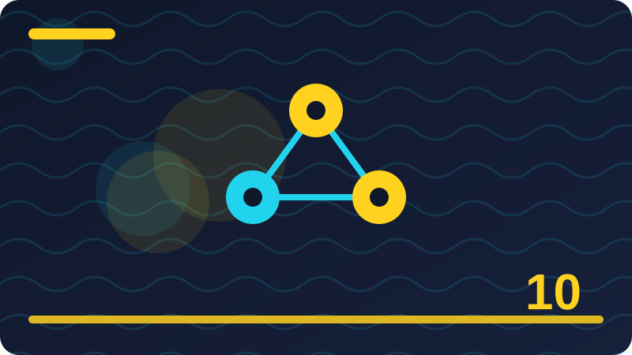

Chapter 10: Features and How Models See Data

Section 1: Models Do Not See the World Directly
This section is about models do not see the world directly, and it belongs in this chapter because it helps you understand how a small program learns from examples and makes guesses you can check. Imagine you are teaching a friend to do models do not see the world directly by showing examples only, with no extra hints, and notice how quickly your friend needs clear rules and honest feedback. A concrete toy case for models do not see the world directly could use a short list you write yourself, such as a few labelled items or a few numbers, so every step stays visible and easy to repeat. Think of models do not see the world directly as a habit your program learns from examples, rather than a magic trick, because every prediction it makes comes from patterns it has already seen in data you gave it.
A good way to picture models do not see the world directly is to imagine sorting objects on a table by hand, noticing what you look at, what you ignore, and how you change your mind when a new object does not fit neatly. Beginners often rush past models do not see the world directly, but taking time here pays off later, since almost every confusing result in a small project can be traced back to this one idea being unclear. When you work with models do not see the world directly on your own machine, you stay in control, because you choose the examples, you can inspect every result, and nothing leaves your computer or costs money. The key question behind models do not see the world directly is simple to ask, even when the answer takes practice, and that question is what pattern, if any, is really present in the examples in front of you.
People sometimes describe models do not see the world directly with impressive words, yet the plain meaning stays the same, which is that a program looks at past examples and uses them to make a reasonable guess about a new case. To learn models do not see the world directly well, try saying it back in your own words before you touch any code, because if you cannot explain it to a friend, the code will only hide the confusion for a while. A toy example makes models do not see the world directly concrete, so imagine only a handful of examples, small enough to check by hand, and ask what a sensible person would guess before asking what a program should guess. One common mistake with models do not see the world directly is to expect perfection, but real data is messy, people disagree about labels, and a useful model is often one that is right most of the time, not every time.
Another common mistake is to judge models do not see the world directly from a single example, because one lucky or unlucky case tells you almost nothing, while a group of checked examples tells you a great deal.
# Tiny local toy example for models do not see the world directly
examples = [("example one", 1), ("example two", 0), ("example three", 1)]
for name, label in examples:
print(name, "->", label)
print("Count:", len(examples))Check: In your own words, what does models do not see the world directly mean, and what is one small example that shows it?
Section 2: Features Are What the Model Sees
This section is about features are what the model sees, and it belongs in this chapter because it helps you understand how a small program learns from examples and makes guesses you can check. Imagine you are teaching a friend to do features are what the model sees by showing examples only, with no extra hints, and notice how quickly your friend needs clear rules and honest feedback. A concrete toy case for features are what the model sees could use a short list you write yourself, such as a few labelled items or a few numbers, so every step stays visible and easy to repeat. A good way to picture features are what the model sees is to imagine sorting objects on a table by hand, noticing what you look at, what you ignore, and how you change your mind when a new object does not fit neatly.
Beginners often rush past features are what the model sees, but taking time here pays off later, since almost every confusing result in a small project can be traced back to this one idea being unclear. When you work with features are what the model sees on your own machine, you stay in control, because you choose the examples, you can inspect every result, and nothing leaves your computer or costs money. The key question behind features are what the model sees is simple to ask, even when the answer takes practice, and that question is what pattern, if any, is really present in the examples in front of you. People sometimes describe features are what the model sees with impressive words, yet the plain meaning stays the same, which is that a program looks at past examples and uses them to make a reasonable guess about a new case.
To learn features are what the model sees well, try saying it back in your own words before you touch any code, because if you cannot explain it to a friend, the code will only hide the confusion for a while. A toy example makes features are what the model sees concrete, so imagine only a handful of examples, small enough to check by hand, and ask what a sensible person would guess before asking what a program should guess. One common mistake with features are what the model sees is to expect perfection, but real data is messy, people disagree about labels, and a useful model is often one that is right most of the time, not every time. Another common mistake is to judge features are what the model sees from a single example, because one lucky or unlucky case tells you almost nothing, while a group of checked examples tells you a great deal.
When you test features are what the model sees, keep your checking examples separate from your learning examples whenever you can, so your score measures learning rather than memory of answers already seen.
# Tiny local toy example for features are what the model sees
examples = [("example one", 1), ("example two", 0), ("example three", 1)]
for name, label in examples:
print(name, "->", label)
print("Count:", len(examples))Check: In your own words, what does features are what the model sees mean, and what is one small example that shows it?
Section 3: Choosing Features by Hand
This section is about choosing features by hand, and it belongs in this chapter because it helps you understand how a small program learns from examples and makes guesses you can check. Imagine you are teaching a friend to do choosing features by hand by showing examples only, with no extra hints, and notice how quickly your friend needs clear rules and honest feedback. A concrete toy case for choosing features by hand could use a short list you write yourself, such as a few labelled items or a few numbers, so every step stays visible and easy to repeat. Beginners often rush past choosing features by hand, but taking time here pays off later, since almost every confusing result in a small project can be traced back to this one idea being unclear.
When you work with choosing features by hand on your own machine, you stay in control, because you choose the examples, you can inspect every result, and nothing leaves your computer or costs money. The key question behind choosing features by hand is simple to ask, even when the answer takes practice, and that question is what pattern, if any, is really present in the examples in front of you. People sometimes describe choosing features by hand with impressive words, yet the plain meaning stays the same, which is that a program looks at past examples and uses them to make a reasonable guess about a new case. To learn choosing features by hand well, try saying it back in your own words before you touch any code, because if you cannot explain it to a friend, the code will only hide the confusion for a while.
A toy example makes choosing features by hand concrete, so imagine only a handful of examples, small enough to check by hand, and ask what a sensible person would guess before asking what a program should guess. One common mistake with choosing features by hand is to expect perfection, but real data is messy, people disagree about labels, and a useful model is often one that is right most of the time, not every time. Another common mistake is to judge choosing features by hand from a single example, because one lucky or unlucky case tells you almost nothing, while a group of checked examples tells you a great deal. When you test choosing features by hand, keep your checking examples separate from your learning examples whenever you can, so your score measures learning rather than memory of answers already seen.
The code in this section is deliberately tiny and uses only the Python standard library, which means you can run it, change one number, run it again, and watch exactly what changes. Reading code about choosing features by hand is useful, but changing it is better, so after you run the example, try a different input, a strange input, and an input that should confuse the program, then note what happens.
# Tiny local toy example for choosing features by hand
examples = [("example one", 1), ("example two", 0), ("example three", 1)]
for name, label in examples:
print(name, "->", label)
print("Count:", len(examples))Check: In your own words, what does choosing features by hand mean, and what is one small example that shows it?
Section 4: Raw Data Versus Useful Features
This section is about raw data versus useful features, and it belongs in this chapter because it helps you understand how a small program learns from examples and makes guesses you can check. Imagine you are teaching a friend to do raw data versus useful features by showing examples only, with no extra hints, and notice how quickly your friend needs clear rules and honest feedback. A concrete toy case for raw data versus useful features could use a short list you write yourself, such as a few labelled items or a few numbers, so every step stays visible and easy to repeat. When you work with raw data versus useful features on your own machine, you stay in control, because you choose the examples, you can inspect every result, and nothing leaves your computer or costs money.
The key question behind raw data versus useful features is simple to ask, even when the answer takes practice, and that question is what pattern, if any, is really present in the examples in front of you. People sometimes describe raw data versus useful features with impressive words, yet the plain meaning stays the same, which is that a program looks at past examples and uses them to make a reasonable guess about a new case. To learn raw data versus useful features well, try saying it back in your own words before you touch any code, because if you cannot explain it to a friend, the code will only hide the confusion for a while. A toy example makes raw data versus useful features concrete, so imagine only a handful of examples, small enough to check by hand, and ask what a sensible person would guess before asking what a program should guess.
One common mistake with raw data versus useful features is to expect perfection, but real data is messy, people disagree about labels, and a useful model is often one that is right most of the time, not every time. Another common mistake is to judge raw data versus useful features from a single example, because one lucky or unlucky case tells you almost nothing, while a group of checked examples tells you a great deal. When you test raw data versus useful features, keep your checking examples separate from your learning examples whenever you can, so your score measures learning rather than memory of answers already seen. The code in this section is deliberately tiny and uses only the Python standard library, which means you can run it, change one number, run it again, and watch exactly what changes.
Reading code about raw data versus useful features is useful, but changing it is better, so after you run the example, try a different input, a strange input, and an input that should confuse the program, then note what happens. If a result surprises you while you explore raw data versus useful features, treat that surprise as information, not failure, because surprising results usually point to a hidden assumption in your examples or your rules.
# Tiny local toy example for raw data versus useful features
examples = [("example one", 1), ("example two", 0), ("example three", 1)]
for name, label in examples:
print(name, "->", label)
print("Count:", len(examples))Check: In your own words, what does raw data versus useful features mean, and what is one small example that shows it?
Section 5: Numbers as Features
This section is about numbers as features, and it belongs in this chapter because it helps you understand how a small program learns from examples and makes guesses you can check. Imagine you are teaching a friend to do numbers as features by showing examples only, with no extra hints, and notice how quickly your friend needs clear rules and honest feedback. A concrete toy case for numbers as features could use a short list you write yourself, such as a few labelled items or a few numbers, so every step stays visible and easy to repeat. The key question behind numbers as features is simple to ask, even when the answer takes practice, and that question is what pattern, if any, is really present in the examples in front of you.
People sometimes describe numbers as features with impressive words, yet the plain meaning stays the same, which is that a program looks at past examples and uses them to make a reasonable guess about a new case. To learn numbers as features well, try saying it back in your own words before you touch any code, because if you cannot explain it to a friend, the code will only hide the confusion for a while. A toy example makes numbers as features concrete, so imagine only a handful of examples, small enough to check by hand, and ask what a sensible person would guess before asking what a program should guess. One common mistake with numbers as features is to expect perfection, but real data is messy, people disagree about labels, and a useful model is often one that is right most of the time, not every time.
Another common mistake is to judge numbers as features from a single example, because one lucky or unlucky case tells you almost nothing, while a group of checked examples tells you a great deal. When you test numbers as features, keep your checking examples separate from your learning examples whenever you can, so your score measures learning rather than memory of answers already seen. The code in this section is deliberately tiny and uses only the Python standard library, which means you can run it, change one number, run it again, and watch exactly what changes. Reading code about numbers as features is useful, but changing it is better, so after you run the example, try a different input, a strange input, and an input that should confuse the program, then note what happens.
If a result surprises you while you explore numbers as features, treat that surprise as information, not failure, because surprising results usually point to a hidden assumption in your examples or your rules. A calm habit for numbers as features is to write down what you expected before you run anything, then compare that expectation with the actual result, and then explain any difference in one plain sentence.
# Tiny local toy example for numbers as features
examples = [("example one", 1), ("example two", 0), ("example three", 1)]
for name, label in examples:
print(name, "->", label)
print("Count:", len(examples))Check: In your own words, what does numbers as features mean, and what is one small example that shows it?
Section 6: Words as Features
This section is about words as features, and it belongs in this chapter because it helps you understand how a small program learns from examples and makes guesses you can check. Imagine you are teaching a friend to do words as features by showing examples only, with no extra hints, and notice how quickly your friend needs clear rules and honest feedback. A concrete toy case for words as features could use a short list you write yourself, such as a few labelled items or a few numbers, so every step stays visible and easy to repeat. People sometimes describe words as features with impressive words, yet the plain meaning stays the same, which is that a program looks at past examples and uses them to make a reasonable guess about a new case.
To learn words as features well, try saying it back in your own words before you touch any code, because if you cannot explain it to a friend, the code will only hide the confusion for a while. A toy example makes words as features concrete, so imagine only a handful of examples, small enough to check by hand, and ask what a sensible person would guess before asking what a program should guess. One common mistake with words as features is to expect perfection, but real data is messy, people disagree about labels, and a useful model is often one that is right most of the time, not every time. Another common mistake is to judge words as features from a single example, because one lucky or unlucky case tells you almost nothing, while a group of checked examples tells you a great deal.
When you test words as features, keep your checking examples separate from your learning examples whenever you can, so your score measures learning rather than memory of answers already seen. The code in this section is deliberately tiny and uses only the Python standard library, which means you can run it, change one number, run it again, and watch exactly what changes. Reading code about words as features is useful, but changing it is better, so after you run the example, try a different input, a strange input, and an input that should confuse the program, then note what happens. If a result surprises you while you explore words as features, treat that surprise as information, not failure, because surprising results usually point to a hidden assumption in your examples or your rules.
A calm habit for words as features is to write down what you expected before you run anything, then compare that expectation with the actual result, and then explain any difference in one plain sentence. Many learners find words as features easier when they draw it first, so sketch the groups, the numbers, or the split on paper, even roughly, before you try to describe the same idea in code.
# Tiny local toy example for words as features
examples = [("example one", 1), ("example two", 0), ("example three", 1)]
for name, label in examples:
print(name, "->", label)
print("Count:", len(examples))Check: In your own words, what does words as features mean, and what is one small example that shows it?
Section 7: Categories as Features
This section is about categories as features, and it belongs in this chapter because it helps you understand how a small program learns from examples and makes guesses you can check. Imagine you are teaching a friend to do categories as features by showing examples only, with no extra hints, and notice how quickly your friend needs clear rules and honest feedback. A concrete toy case for categories as features could use a short list you write yourself, such as a few labelled items or a few numbers, so every step stays visible and easy to repeat. To learn categories as features well, try saying it back in your own words before you touch any code, because if you cannot explain it to a friend, the code will only hide the confusion for a while.
A toy example makes categories as features concrete, so imagine only a handful of examples, small enough to check by hand, and ask what a sensible person would guess before asking what a program should guess. One common mistake with categories as features is to expect perfection, but real data is messy, people disagree about labels, and a useful model is often one that is right most of the time, not every time. Another common mistake is to judge categories as features from a single example, because one lucky or unlucky case tells you almost nothing, while a group of checked examples tells you a great deal. When you test categories as features, keep your checking examples separate from your learning examples whenever you can, so your score measures learning rather than memory of answers already seen.
The code in this section is deliberately tiny and uses only the Python standard library, which means you can run it, change one number, run it again, and watch exactly what changes. Reading code about categories as features is useful, but changing it is better, so after you run the example, try a different input, a strange input, and an input that should confuse the program, then note what happens. If a result surprises you while you explore categories as features, treat that surprise as information, not failure, because surprising results usually point to a hidden assumption in your examples or your rules. A calm habit for categories as features is to write down what you expected before you run anything, then compare that expectation with the actual result, and then explain any difference in one plain sentence.
Many learners find categories as features easier when they draw it first, so sketch the groups, the numbers, or the split on paper, even roughly, before you try to describe the same idea in code. Notice how categories as features connects to the previous section, because learning builds in layers, and each new idea either sharpens an old rule, adds a check, or warns you about a trap you might otherwise miss.
# Tiny local toy example for categories as features
examples = [("example one", 1), ("example two", 0), ("example three", 1)]
for name, label in examples:
print(name, "->", label)
print("Count:", len(examples))Check: In your own words, what does categories as features mean, and what is one small example that shows it?
Section 8: Yes or No as a Feature
This section is about yes or no as a feature, and it belongs in this chapter because it helps you understand how a small program learns from examples and makes guesses you can check. Imagine you are teaching a friend to do yes or no as a feature by showing examples only, with no extra hints, and notice how quickly your friend needs clear rules and honest feedback. A concrete toy case for yes or no as a feature could use a short list you write yourself, such as a few labelled items or a few numbers, so every step stays visible and easy to repeat. A toy example makes yes or no as a feature concrete, so imagine only a handful of examples, small enough to check by hand, and ask what a sensible person would guess before asking what a program should guess.
One common mistake with yes or no as a feature is to expect perfection, but real data is messy, people disagree about labels, and a useful model is often one that is right most of the time, not every time. Another common mistake is to judge yes or no as a feature from a single example, because one lucky or unlucky case tells you almost nothing, while a group of checked examples tells you a great deal. When you test yes or no as a feature, keep your checking examples separate from your learning examples whenever you can, so your score measures learning rather than memory of answers already seen. The code in this section is deliberately tiny and uses only the Python standard library, which means you can run it, change one number, run it again, and watch exactly what changes.
Reading code about yes or no as a feature is useful, but changing it is better, so after you run the example, try a different input, a strange input, and an input that should confuse the program, then note what happens. If a result surprises you while you explore yes or no as a feature, treat that surprise as information, not failure, because surprising results usually point to a hidden assumption in your examples or your rules. A calm habit for yes or no as a feature is to write down what you expected before you run anything, then compare that expectation with the actual result, and then explain any difference in one plain sentence. Many learners find yes or no as a feature easier when they draw it first, so sketch the groups, the numbers, or the split on paper, even roughly, before you try to describe the same idea in code.
Notice how yes or no as a feature connects to the previous section, because learning builds in layers, and each new idea either sharpens an old rule, adds a check, or warns you about a trap you might otherwise miss.
# Tiny local toy example for yes or no as a feature
examples = [("example one", 1), ("example two", 0), ("example three", 1)]
for name, label in examples:
print(name, "->", label)
print("Count:", len(examples))Check: In your own words, what does yes or no as a feature mean, and what is one small example that shows it?
Section 9: Dates and Times as Features
This section is about dates and times as features, and it belongs in this chapter because it helps you understand how a small program learns from examples and makes guesses you can check. Imagine you are teaching a friend to do dates and times as features by showing examples only, with no extra hints, and notice how quickly your friend needs clear rules and honest feedback. A concrete toy case for dates and times as features could use a short list you write yourself, such as a few labelled items or a few numbers, so every step stays visible and easy to repeat. One common mistake with dates and times as features is to expect perfection, but real data is messy, people disagree about labels, and a useful model is often one that is right most of the time, not every time.
Another common mistake is to judge dates and times as features from a single example, because one lucky or unlucky case tells you almost nothing, while a group of checked examples tells you a great deal. When you test dates and times as features, keep your checking examples separate from your learning examples whenever you can, so your score measures learning rather than memory of answers already seen. The code in this section is deliberately tiny and uses only the Python standard library, which means you can run it, change one number, run it again, and watch exactly what changes. Reading code about dates and times as features is useful, but changing it is better, so after you run the example, try a different input, a strange input, and an input that should confuse the program, then note what happens.
If a result surprises you while you explore dates and times as features, treat that surprise as information, not failure, because surprising results usually point to a hidden assumption in your examples or your rules. A calm habit for dates and times as features is to write down what you expected before you run anything, then compare that expectation with the actual result, and then explain any difference in one plain sentence. Many learners find dates and times as features easier when they draw it first, so sketch the groups, the numbers, or the split on paper, even roughly, before you try to describe the same idea in code. Notice how dates and times as features connects to the previous section, because learning builds in layers, and each new idea either sharpens an old rule, adds a check, or warns you about a trap you might otherwise miss.
You do not need a large data set to understand dates and times as features, and in fact a small set you fully understand teaches more than a huge set you never inspect, since you can trace every decision by hand. When you explain dates and times as features to someone else, use their world first, such as cooking, sport, school, or shopping, and only afterwards translate that everyday picture back into the language of data and models.
# Tiny local toy example for dates and times as features
examples = [("example one", 1), ("example two", 0), ("example three", 1)]
for name, label in examples:
print(name, "->", label)
print("Count:", len(examples))Check: In your own words, what does dates and times as features mean, and what is one small example that shows it?
Section 10: Turning Words into Numbers
This section is about turning words into numbers, and it belongs in this chapter because it helps you understand how a small program learns from examples and makes guesses you can check. Imagine you are teaching a friend to do turning words into numbers by showing examples only, with no extra hints, and notice how quickly your friend needs clear rules and honest feedback. A concrete toy case for turning words into numbers could use a short list you write yourself, such as a few labelled items or a few numbers, so every step stays visible and easy to repeat. Another common mistake is to judge turning words into numbers from a single example, because one lucky or unlucky case tells you almost nothing, while a group of checked examples tells you a great deal.
When you test turning words into numbers, keep your checking examples separate from your learning examples whenever you can, so your score measures learning rather than memory of answers already seen. The code in this section is deliberately tiny and uses only the Python standard library, which means you can run it, change one number, run it again, and watch exactly what changes. Reading code about turning words into numbers is useful, but changing it is better, so after you run the example, try a different input, a strange input, and an input that should confuse the program, then note what happens. If a result surprises you while you explore turning words into numbers, treat that surprise as information, not failure, because surprising results usually point to a hidden assumption in your examples or your rules.
A calm habit for turning words into numbers is to write down what you expected before you run anything, then compare that expectation with the actual result, and then explain any difference in one plain sentence. Many learners find turning words into numbers easier when they draw it first, so sketch the groups, the numbers, or the split on paper, even roughly, before you try to describe the same idea in code. Notice how turning words into numbers connects to the previous section, because learning builds in layers, and each new idea either sharpens an old rule, adds a check, or warns you about a trap you might otherwise miss. You do not need a large data set to understand turning words into numbers, and in fact a small set you fully understand teaches more than a huge set you never inspect, since you can trace every decision by hand.
When you explain turning words into numbers to someone else, use their world first, such as cooking, sport, school, or shopping, and only afterwards translate that everyday picture back into the language of data and models. A useful test for turning words into numbers is to ask what would happen if the data changed slightly, because a solid idea stays sensible under small changes, while a fragile idea falls apart at the first surprise.
# Tiny local toy example for turning words into numbers
examples = [("example one", 1), ("example two", 0), ("example three", 1)]
for name, label in examples:
print(name, "->", label)
print("Count:", len(examples))Check: In your own words, what does turning words into numbers mean, and what is one small example that shows it?
Section 11: One-Hot Encoding in Plain Words
This section is about one-hot encoding in plain words, and it belongs in this chapter because it helps you understand how a small program learns from examples and makes guesses you can check. Imagine you are teaching a friend to do one-hot encoding in plain words by showing examples only, with no extra hints, and notice how quickly your friend needs clear rules and honest feedback. A concrete toy case for one-hot encoding in plain words could use a short list you write yourself, such as a few labelled items or a few numbers, so every step stays visible and easy to repeat. When you test one-hot encoding in plain words, keep your checking examples separate from your learning examples whenever you can, so your score measures learning rather than memory of answers already seen.
The code in this section is deliberately tiny and uses only the Python standard library, which means you can run it, change one number, run it again, and watch exactly what changes. Reading code about one-hot encoding in plain words is useful, but changing it is better, so after you run the example, try a different input, a strange input, and an input that should confuse the program, then note what happens. If a result surprises you while you explore one-hot encoding in plain words, treat that surprise as information, not failure, because surprising results usually point to a hidden assumption in your examples or your rules. A calm habit for one-hot encoding in plain words is to write down what you expected before you run anything, then compare that expectation with the actual result, and then explain any difference in one plain sentence.
Many learners find one-hot encoding in plain words easier when they draw it first, so sketch the groups, the numbers, or the split on paper, even roughly, before you try to describe the same idea in code. Notice how one-hot encoding in plain words connects to the previous section, because learning builds in layers, and each new idea either sharpens an old rule, adds a check, or warns you about a trap you might otherwise miss. You do not need a large data set to understand one-hot encoding in plain words, and in fact a small set you fully understand teaches more than a huge set you never inspect, since you can trace every decision by hand. When you explain one-hot encoding in plain words to someone else, use their world first, such as cooking, sport, school, or shopping, and only afterwards translate that everyday picture back into the language of data and models.
A useful test for one-hot encoding in plain words is to ask what would happen if the data changed slightly, because a solid idea stays sensible under small changes, while a fragile idea falls apart at the first surprise. Keep your notes about one-hot encoding in plain words short and practical, recording the definition in one sentence, one example that worked, one example that failed, and one question you still want to answer.
# Tiny local toy example for one-hot encoding in plain words
examples = [("example one", 1), ("example two", 0), ("example three", 1)]
for name, label in examples:
print(name, "->", label)
print("Count:", len(examples))Check: In your own words, what does one-hot encoding in plain words mean, and what is one small example that shows it?
Section 12: Counting Words as Features
This section is about counting words as features, and it belongs in this chapter because it helps you understand how a small program learns from examples and makes guesses you can check. Imagine you are teaching a friend to do counting words as features by showing examples only, with no extra hints, and notice how quickly your friend needs clear rules and honest feedback. A concrete toy case for counting words as features could use a short list you write yourself, such as a few labelled items or a few numbers, so every step stays visible and easy to repeat. The code in this section is deliberately tiny and uses only the Python standard library, which means you can run it, change one number, run it again, and watch exactly what changes.
Reading code about counting words as features is useful, but changing it is better, so after you run the example, try a different input, a strange input, and an input that should confuse the program, then note what happens. If a result surprises you while you explore counting words as features, treat that surprise as information, not failure, because surprising results usually point to a hidden assumption in your examples or your rules. A calm habit for counting words as features is to write down what you expected before you run anything, then compare that expectation with the actual result, and then explain any difference in one plain sentence. Many learners find counting words as features easier when they draw it first, so sketch the groups, the numbers, or the split on paper, even roughly, before you try to describe the same idea in code.
Notice how counting words as features connects to the previous section, because learning builds in layers, and each new idea either sharpens an old rule, adds a check, or warns you about a trap you might otherwise miss. You do not need a large data set to understand counting words as features, and in fact a small set you fully understand teaches more than a huge set you never inspect, since you can trace every decision by hand. When you explain counting words as features to someone else, use their world first, such as cooking, sport, school, or shopping, and only afterwards translate that everyday picture back into the language of data and models. A useful test for counting words as features is to ask what would happen if the data changed slightly, because a solid idea stays sensible under small changes, while a fragile idea falls apart at the first surprise.
Keep your notes about counting words as features short and practical, recording the definition in one sentence, one example that worked, one example that failed, and one question you still want to answer. The difference between knowing about counting words as features and being able to use it is practice, so the small exercises at the end of this section matter more than reading the same explanation a second time.
# Tiny local toy example for counting words as features
examples = [("example one", 1), ("example two", 0), ("example three", 1)]
for name, label in examples:
print(name, "->", label)
print("Count:", len(examples))Check: In your own words, what does counting words as features mean, and what is one small example that shows it?
Section 13: Lengths and Counts as Features
This section is about lengths and counts as features, and it belongs in this chapter because it helps you understand how a small program learns from examples and makes guesses you can check. Imagine you are teaching a friend to do lengths and counts as features by showing examples only, with no extra hints, and notice how quickly your friend needs clear rules and honest feedback. A concrete toy case for lengths and counts as features could use a short list you write yourself, such as a few labelled items or a few numbers, so every step stays visible and easy to repeat. Reading code about lengths and counts as features is useful, but changing it is better, so after you run the example, try a different input, a strange input, and an input that should confuse the program, then note what happens.
If a result surprises you while you explore lengths and counts as features, treat that surprise as information, not failure, because surprising results usually point to a hidden assumption in your examples or your rules. A calm habit for lengths and counts as features is to write down what you expected before you run anything, then compare that expectation with the actual result, and then explain any difference in one plain sentence. Many learners find lengths and counts as features easier when they draw it first, so sketch the groups, the numbers, or the split on paper, even roughly, before you try to describe the same idea in code. Notice how lengths and counts as features connects to the previous section, because learning builds in layers, and each new idea either sharpens an old rule, adds a check, or warns you about a trap you might otherwise miss.
You do not need a large data set to understand lengths and counts as features, and in fact a small set you fully understand teaches more than a huge set you never inspect, since you can trace every decision by hand. When you explain lengths and counts as features to someone else, use their world first, such as cooking, sport, school, or shopping, and only afterwards translate that everyday picture back into the language of data and models. A useful test for lengths and counts as features is to ask what would happen if the data changed slightly, because a solid idea stays sensible under small changes, while a fragile idea falls apart at the first surprise. Keep your notes about lengths and counts as features short and practical, recording the definition in one sentence, one example that worked, one example that failed, and one question you still want to answer.
The difference between knowing about lengths and counts as features and being able to use it is practice, so the small exercises at the end of this section matter more than reading the same explanation a second time.
# Tiny local toy example for lengths and counts as features
examples = [("example one", 1), ("example two", 0), ("example three", 1)]
for name, label in examples:
print(name, "->", label)
print("Count:", len(examples))Check: In your own words, what does lengths and counts as features mean, and what is one small example that shows it?
Section 14: Ratios That Reveal Patterns
This section is about ratios that reveal patterns, and it belongs in this chapter because it helps you understand how a small program learns from examples and makes guesses you can check. Imagine you are teaching a friend to do ratios that reveal patterns by showing examples only, with no extra hints, and notice how quickly your friend needs clear rules and honest feedback. A concrete toy case for ratios that reveal patterns could use a short list you write yourself, such as a few labelled items or a few numbers, so every step stays visible and easy to repeat. If a result surprises you while you explore ratios that reveal patterns, treat that surprise as information, not failure, because surprising results usually point to a hidden assumption in your examples or your rules.
A calm habit for ratios that reveal patterns is to write down what you expected before you run anything, then compare that expectation with the actual result, and then explain any difference in one plain sentence. Many learners find ratios that reveal patterns easier when they draw it first, so sketch the groups, the numbers, or the split on paper, even roughly, before you try to describe the same idea in code. Notice how ratios that reveal patterns connects to the previous section, because learning builds in layers, and each new idea either sharpens an old rule, adds a check, or warns you about a trap you might otherwise miss. You do not need a large data set to understand ratios that reveal patterns, and in fact a small set you fully understand teaches more than a huge set you never inspect, since you can trace every decision by hand.
When you explain ratios that reveal patterns to someone else, use their world first, such as cooking, sport, school, or shopping, and only afterwards translate that everyday picture back into the language of data and models. A useful test for ratios that reveal patterns is to ask what would happen if the data changed slightly, because a solid idea stays sensible under small changes, while a fragile idea falls apart at the first surprise. Keep your notes about ratios that reveal patterns short and practical, recording the definition in one sentence, one example that worked, one example that failed, and one question you still want to answer. The difference between knowing about ratios that reveal patterns and being able to use it is practice, so the small exercises at the end of this section matter more than reading the same explanation a second time.
If you feel stuck on ratios that reveal patterns, shrink the problem until it feels easy again, using fewer examples, fewer inputs, or a simpler rule, and then grow it back step by step until the difficulty returns. A program that handles ratios that reveal patterns well is usually boring in a good way, because it behaves predictably, it fails in ways you can explain, and it does not pretend to know more than its examples support.
# Tiny local toy example for ratios that reveal patterns
examples = [("example one", 1), ("example two", 0), ("example three", 1)]
for name, label in examples:
print(name, "->", label)
print("Count:", len(examples))Check: In your own words, what does ratios that reveal patterns mean, and what is one small example that shows it?
Section 15: Differences That Matter More
This section is about differences that matter more, and it belongs in this chapter because it helps you understand how a small program learns from examples and makes guesses you can check. Imagine you are teaching a friend to do differences that matter more by showing examples only, with no extra hints, and notice how quickly your friend needs clear rules and honest feedback. A concrete toy case for differences that matter more could use a short list you write yourself, such as a few labelled items or a few numbers, so every step stays visible and easy to repeat. A calm habit for differences that matter more is to write down what you expected before you run anything, then compare that expectation with the actual result, and then explain any difference in one plain sentence.
Many learners find differences that matter more easier when they draw it first, so sketch the groups, the numbers, or the split on paper, even roughly, before you try to describe the same idea in code. Notice how differences that matter more connects to the previous section, because learning builds in layers, and each new idea either sharpens an old rule, adds a check, or warns you about a trap you might otherwise miss. You do not need a large data set to understand differences that matter more, and in fact a small set you fully understand teaches more than a huge set you never inspect, since you can trace every decision by hand. When you explain differences that matter more to someone else, use their world first, such as cooking, sport, school, or shopping, and only afterwards translate that everyday picture back into the language of data and models.
A useful test for differences that matter more is to ask what would happen if the data changed slightly, because a solid idea stays sensible under small changes, while a fragile idea falls apart at the first surprise. Keep your notes about differences that matter more short and practical, recording the definition in one sentence, one example that worked, one example that failed, and one question you still want to answer. The difference between knowing about differences that matter more and being able to use it is practice, so the small exercises at the end of this section matter more than reading the same explanation a second time. If you feel stuck on differences that matter more, shrink the problem until it feels easy again, using fewer examples, fewer inputs, or a simpler rule, and then grow it back step by step until the difficulty returns.
A program that handles differences that matter more well is usually boring in a good way, because it behaves predictably, it fails in ways you can explain, and it does not pretend to know more than its examples support. Remember that differences that matter more is a tool for helping people decide, not a replacement for judgement, so a sensible builder always leaves room for a person to check, correct, or overrule the result.
# Tiny local toy example for differences that matter more
examples = [("example one", 1), ("example two", 0), ("example three", 1)]
for name, label in examples:
print(name, "->", label)
print("Count:", len(examples))Check: In your own words, what does differences that matter more mean, and what is one small example that shows it?
Section 16: Combining Features into New Ones
This section is about combining features into new ones, and it belongs in this chapter because it helps you understand how a small program learns from examples and makes guesses you can check. Imagine you are teaching a friend to do combining features into new ones by showing examples only, with no extra hints, and notice how quickly your friend needs clear rules and honest feedback. A concrete toy case for combining features into new ones could use a short list you write yourself, such as a few labelled items or a few numbers, so every step stays visible and easy to repeat. Many learners find combining features into new ones easier when they draw it first, so sketch the groups, the numbers, or the split on paper, even roughly, before you try to describe the same idea in code.
Notice how combining features into new ones connects to the previous section, because learning builds in layers, and each new idea either sharpens an old rule, adds a check, or warns you about a trap you might otherwise miss. You do not need a large data set to understand combining features into new ones, and in fact a small set you fully understand teaches more than a huge set you never inspect, since you can trace every decision by hand. When you explain combining features into new ones to someone else, use their world first, such as cooking, sport, school, or shopping, and only afterwards translate that everyday picture back into the language of data and models. A useful test for combining features into new ones is to ask what would happen if the data changed slightly, because a solid idea stays sensible under small changes, while a fragile idea falls apart at the first surprise.
Keep your notes about combining features into new ones short and practical, recording the definition in one sentence, one example that worked, one example that failed, and one question you still want to answer. The difference between knowing about combining features into new ones and being able to use it is practice, so the small exercises at the end of this section matter more than reading the same explanation a second time. If you feel stuck on combining features into new ones, shrink the problem until it feels easy again, using fewer examples, fewer inputs, or a simpler rule, and then grow it back step by step until the difficulty returns. A program that handles combining features into new ones well is usually boring in a good way, because it behaves predictably, it fails in ways you can explain, and it does not pretend to know more than its examples support.
Remember that combining features into new ones is a tool for helping people decide, not a replacement for judgement, so a sensible builder always leaves room for a person to check, correct, or overrule the result.
# Tiny local toy example for combining features into new ones
examples = [("example one", 1), ("example two", 0), ("example three", 1)]
for name, label in examples:
print(name, "->", label)
print("Count:", len(examples))Check: In your own words, what does combining features into new ones mean, and what is one small example that shows it?
Section 17: Features That Leak the Answer
This section is about features that leak the answer, and it belongs in this chapter because it helps you understand how a small program learns from examples and makes guesses you can check. Imagine you are teaching a friend to do features that leak the answer by showing examples only, with no extra hints, and notice how quickly your friend needs clear rules and honest feedback. A concrete toy case for features that leak the answer could use a short list you write yourself, such as a few labelled items or a few numbers, so every step stays visible and easy to repeat. Notice how features that leak the answer connects to the previous section, because learning builds in layers, and each new idea either sharpens an old rule, adds a check, or warns you about a trap you might otherwise miss.
You do not need a large data set to understand features that leak the answer, and in fact a small set you fully understand teaches more than a huge set you never inspect, since you can trace every decision by hand. When you explain features that leak the answer to someone else, use their world first, such as cooking, sport, school, or shopping, and only afterwards translate that everyday picture back into the language of data and models. A useful test for features that leak the answer is to ask what would happen if the data changed slightly, because a solid idea stays sensible under small changes, while a fragile idea falls apart at the first surprise. Keep your notes about features that leak the answer short and practical, recording the definition in one sentence, one example that worked, one example that failed, and one question you still want to answer.
The difference between knowing about features that leak the answer and being able to use it is practice, so the small exercises at the end of this section matter more than reading the same explanation a second time. If you feel stuck on features that leak the answer, shrink the problem until it feels easy again, using fewer examples, fewer inputs, or a simpler rule, and then grow it back step by step until the difficulty returns. A program that handles features that leak the answer well is usually boring in a good way, because it behaves predictably, it fails in ways you can explain, and it does not pretend to know more than its examples support. Remember that features that leak the answer is a tool for helping people decide, not a replacement for judgement, so a sensible builder always leaves room for a person to check, correct, or overrule the result.
Before you move on from features that leak the answer, check that you can name one situation where it helps, one situation where it misleads, and one simple check you would run before trusting its output.
# Tiny local toy example for features that leak the answer
examples = [("example one", 1), ("example two", 0), ("example three", 1)]
for name, label in examples:
print(name, "->", label)
print("Count:", len(examples))Check: In your own words, what does features that leak the answer mean, and what is one small example that shows it?
Section 18: Features That Are Just Noise
This section is about features that are just noise, and it belongs in this chapter because it helps you understand how a small program learns from examples and makes guesses you can check. Imagine you are teaching a friend to do features that are just noise by showing examples only, with no extra hints, and notice how quickly your friend needs clear rules and honest feedback. A concrete toy case for features that are just noise could use a short list you write yourself, such as a few labelled items or a few numbers, so every step stays visible and easy to repeat. You do not need a large data set to understand features that are just noise, and in fact a small set you fully understand teaches more than a huge set you never inspect, since you can trace every decision by hand.
When you explain features that are just noise to someone else, use their world first, such as cooking, sport, school, or shopping, and only afterwards translate that everyday picture back into the language of data and models. A useful test for features that are just noise is to ask what would happen if the data changed slightly, because a solid idea stays sensible under small changes, while a fragile idea falls apart at the first surprise. Keep your notes about features that are just noise short and practical, recording the definition in one sentence, one example that worked, one example that failed, and one question you still want to answer. The difference between knowing about features that are just noise and being able to use it is practice, so the small exercises at the end of this section matter more than reading the same explanation a second time.
If you feel stuck on features that are just noise, shrink the problem until it feels easy again, using fewer examples, fewer inputs, or a simpler rule, and then grow it back step by step until the difficulty returns. A program that handles features that are just noise well is usually boring in a good way, because it behaves predictably, it fails in ways you can explain, and it does not pretend to know more than its examples support. Remember that features that are just noise is a tool for helping people decide, not a replacement for judgement, so a sensible builder always leaves room for a person to check, correct, or overrule the result. Before you move on from features that are just noise, check that you can name one situation where it helps, one situation where it misleads, and one simple check you would run before trusting its output.
The examples in this section use invented toy data on purpose, so you can focus on the idea itself without worrying about private information, licences, or the cost of a real service. As you practise features that are just noise, pay attention to the inputs more than the cleverness of the method, because clean, honest inputs usually matter more than a complicated technique applied to messy inputs.
# Tiny local toy example for features that are just noise
examples = [("example one", 1), ("example two", 0), ("example three", 1)]
for name, label in examples:
print(name, "->", label)
print("Count:", len(examples))Check: In your own words, what does features that are just noise mean, and what is one small example that shows it?
Section 19: Too Many Features, Too Little Data
This section is about too many features, too little data, and it belongs in this chapter because it helps you understand how a small program learns from examples and makes guesses you can check. Imagine you are teaching a friend to do too many features, too little data by showing examples only, with no extra hints, and notice how quickly your friend needs clear rules and honest feedback. A concrete toy case for too many features, too little data could use a short list you write yourself, such as a few labelled items or a few numbers, so every step stays visible and easy to repeat. When you explain too many features, too little data to someone else, use their world first, such as cooking, sport, school, or shopping, and only afterwards translate that everyday picture back into the language of data and models.
A useful test for too many features, too little data is to ask what would happen if the data changed slightly, because a solid idea stays sensible under small changes, while a fragile idea falls apart at the first surprise. Keep your notes about too many features, too little data short and practical, recording the definition in one sentence, one example that worked, one example that failed, and one question you still want to answer. The difference between knowing about too many features, too little data and being able to use it is practice, so the small exercises at the end of this section matter more than reading the same explanation a second time. If you feel stuck on too many features, too little data, shrink the problem until it feels easy again, using fewer examples, fewer inputs, or a simpler rule, and then grow it back step by step until the difficulty returns.
A program that handles too many features, too little data well is usually boring in a good way, because it behaves predictably, it fails in ways you can explain, and it does not pretend to know more than its examples support. Remember that too many features, too little data is a tool for helping people decide, not a replacement for judgement, so a sensible builder always leaves room for a person to check, correct, or overrule the result. Before you move on from too many features, too little data, check that you can name one situation where it helps, one situation where it misleads, and one simple check you would run before trusting its output. The examples in this section use invented toy data on purpose, so you can focus on the idea itself without worrying about private information, licences, or the cost of a real service.
As you practise too many features, too little data, pay attention to the inputs more than the cleverness of the method, because clean, honest inputs usually matter more than a complicated technique applied to messy inputs.
# Tiny local toy example for too many features, too little data
examples = [("example one", 1), ("example two", 0), ("example three", 1)]
for name, label in examples:
print(name, "->", label)
print("Count:", len(examples))Check: In your own words, what does too many features, too little data mean, and what is one small example that shows it?
Section 20: Too Few Features, Too Little Signal
This section is about too few features, too little signal, and it belongs in this chapter because it helps you understand how a small program learns from examples and makes guesses you can check. Imagine you are teaching a friend to do too few features, too little signal by showing examples only, with no extra hints, and notice how quickly your friend needs clear rules and honest feedback. A concrete toy case for too few features, too little signal could use a short list you write yourself, such as a few labelled items or a few numbers, so every step stays visible and easy to repeat. A useful test for too few features, too little signal is to ask what would happen if the data changed slightly, because a solid idea stays sensible under small changes, while a fragile idea falls apart at the first surprise.
Keep your notes about too few features, too little signal short and practical, recording the definition in one sentence, one example that worked, one example that failed, and one question you still want to answer. The difference between knowing about too few features, too little signal and being able to use it is practice, so the small exercises at the end of this section matter more than reading the same explanation a second time. If you feel stuck on too few features, too little signal, shrink the problem until it feels easy again, using fewer examples, fewer inputs, or a simpler rule, and then grow it back step by step until the difficulty returns. A program that handles too few features, too little signal well is usually boring in a good way, because it behaves predictably, it fails in ways you can explain, and it does not pretend to know more than its examples support.
Remember that too few features, too little signal is a tool for helping people decide, not a replacement for judgement, so a sensible builder always leaves room for a person to check, correct, or overrule the result. Before you move on from too few features, too little signal, check that you can name one situation where it helps, one situation where it misleads, and one simple check you would run before trusting its output. The examples in this section use invented toy data on purpose, so you can focus on the idea itself without worrying about private information, licences, or the cost of a real service. As you practise too few features, too little signal, pay attention to the inputs more than the cleverness of the method, because clean, honest inputs usually matter more than a complicated technique applied to messy inputs.
Finally, treat too few features, too little signal as a building block, not a finished product, since later chapters will reuse it inside larger tools, where its strengths and its limits will both become clearer. In plain words, too few features, too little signal is one small idea you can understand without any special background, and this section explains it slowly, with an everyday example first and a tiny local program second.
# Tiny local toy example for too few features, too little signal
examples = [("example one", 1), ("example two", 0), ("example three", 1)]
for name, label in examples:
print(name, "->", label)
print("Count:", len(examples))Check: In your own words, what does too few features, too little signal mean, and what is one small example that shows it?
Section 21: Scaling Features Fairly
This section is about scaling features fairly, and it belongs in this chapter because it helps you understand how a small program learns from examples and makes guesses you can check. Imagine you are teaching a friend to do scaling features fairly by showing examples only, with no extra hints, and notice how quickly your friend needs clear rules and honest feedback. A concrete toy case for scaling features fairly could use a short list you write yourself, such as a few labelled items or a few numbers, so every step stays visible and easy to repeat. Keep your notes about scaling features fairly short and practical, recording the definition in one sentence, one example that worked, one example that failed, and one question you still want to answer.
The difference between knowing about scaling features fairly and being able to use it is practice, so the small exercises at the end of this section matter more than reading the same explanation a second time. If you feel stuck on scaling features fairly, shrink the problem until it feels easy again, using fewer examples, fewer inputs, or a simpler rule, and then grow it back step by step until the difficulty returns. A program that handles scaling features fairly well is usually boring in a good way, because it behaves predictably, it fails in ways you can explain, and it does not pretend to know more than its examples support. Remember that scaling features fairly is a tool for helping people decide, not a replacement for judgement, so a sensible builder always leaves room for a person to check, correct, or overrule the result.
Before you move on from scaling features fairly, check that you can name one situation where it helps, one situation where it misleads, and one simple check you would run before trusting its output. The examples in this section use invented toy data on purpose, so you can focus on the idea itself without worrying about private information, licences, or the cost of a real service. As you practise scaling features fairly, pay attention to the inputs more than the cleverness of the method, because clean, honest inputs usually matter more than a complicated technique applied to messy inputs. Finally, treat scaling features fairly as a building block, not a finished product, since later chapters will reuse it inside larger tools, where its strengths and its limits will both become clearer.
In plain words, scaling features fairly is one small idea you can understand without any special background, and this section explains it slowly, with an everyday example first and a tiny local program second. Think of scaling features fairly as a habit your program learns from examples, rather than a magic trick, because every prediction it makes comes from patterns it has already seen in data you gave it. A good way to picture scaling features fairly is to imagine sorting objects on a table by hand, noticing what you look at, what you ignore, and how you change your mind when a new object does not fit neatly.
# Tiny local toy example for scaling features fairly
examples = [("example one", 1), ("example two", 0), ("example three", 1)]
for name, label in examples:
print(name, "->", label)
print("Count:", len(examples))Check: In your own words, what does scaling features fairly mean, and what is one small example that shows it?
Section 22: Why Scale Changes Distance
This section is about why scale changes distance, and it belongs in this chapter because it helps you understand how a small program learns from examples and makes guesses you can check. Imagine you are teaching a friend to do why scale changes distance by showing examples only, with no extra hints, and notice how quickly your friend needs clear rules and honest feedback. A concrete toy case for why scale changes distance could use a short list you write yourself, such as a few labelled items or a few numbers, so every step stays visible and easy to repeat. The difference between knowing about why scale changes distance and being able to use it is practice, so the small exercises at the end of this section matter more than reading the same explanation a second time.
If you feel stuck on why scale changes distance, shrink the problem until it feels easy again, using fewer examples, fewer inputs, or a simpler rule, and then grow it back step by step until the difficulty returns. A program that handles why scale changes distance well is usually boring in a good way, because it behaves predictably, it fails in ways you can explain, and it does not pretend to know more than its examples support. Remember that why scale changes distance is a tool for helping people decide, not a replacement for judgement, so a sensible builder always leaves room for a person to check, correct, or overrule the result. Before you move on from why scale changes distance, check that you can name one situation where it helps, one situation where it misleads, and one simple check you would run before trusting its output.
The examples in this section use invented toy data on purpose, so you can focus on the idea itself without worrying about private information, licences, or the cost of a real service. As you practise why scale changes distance, pay attention to the inputs more than the cleverness of the method, because clean, honest inputs usually matter more than a complicated technique applied to messy inputs. Finally, treat why scale changes distance as a building block, not a finished product, since later chapters will reuse it inside larger tools, where its strengths and its limits will both become clearer. In plain words, why scale changes distance is one small idea you can understand without any special background, and this section explains it slowly, with an everyday example first and a tiny local program second.
Think of why scale changes distance as a habit your program learns from examples, rather than a magic trick, because every prediction it makes comes from patterns it has already seen in data you gave it. A good way to picture why scale changes distance is to imagine sorting objects on a table by hand, noticing what you look at, what you ignore, and how you change your mind when a new object does not fit neatly.
# Tiny local toy example for why scale changes distance
examples = [("example one", 1), ("example two", 0), ("example three", 1)]
for name, label in examples:
print(name, "->", label)
print("Count:", len(examples))Check: In your own words, what does why scale changes distance mean, and what is one small example that shows it?
Section 23: Normalising to a Common Range
This section is about normalising to a common range, and it belongs in this chapter because it helps you understand how a small program learns from examples and makes guesses you can check. Imagine you are teaching a friend to do normalising to a common range by showing examples only, with no extra hints, and notice how quickly your friend needs clear rules and honest feedback. A concrete toy case for normalising to a common range could use a short list you write yourself, such as a few labelled items or a few numbers, so every step stays visible and easy to repeat. If you feel stuck on normalising to a common range, shrink the problem until it feels easy again, using fewer examples, fewer inputs, or a simpler rule, and then grow it back step by step until the difficulty returns.
A program that handles normalising to a common range well is usually boring in a good way, because it behaves predictably, it fails in ways you can explain, and it does not pretend to know more than its examples support. Remember that normalising to a common range is a tool for helping people decide, not a replacement for judgement, so a sensible builder always leaves room for a person to check, correct, or overrule the result. Before you move on from normalising to a common range, check that you can name one situation where it helps, one situation where it misleads, and one simple check you would run before trusting its output. The examples in this section use invented toy data on purpose, so you can focus on the idea itself without worrying about private information, licences, or the cost of a real service.
As you practise normalising to a common range, pay attention to the inputs more than the cleverness of the method, because clean, honest inputs usually matter more than a complicated technique applied to messy inputs. Finally, treat normalising to a common range as a building block, not a finished product, since later chapters will reuse it inside larger tools, where its strengths and its limits will both become clearer. In plain words, normalising to a common range is one small idea you can understand without any special background, and this section explains it slowly, with an everyday example first and a tiny local program second. Think of normalising to a common range as a habit your program learns from examples, rather than a magic trick, because every prediction it makes comes from patterns it has already seen in data you gave it.
A good way to picture normalising to a common range is to imagine sorting objects on a table by hand, noticing what you look at, what you ignore, and how you change your mind when a new object does not fit neatly. Beginners often rush past normalising to a common range, but taking time here pays off later, since almost every confusing result in a small project can be traced back to this one idea being unclear.
# Tiny local toy example for normalising to a common range
examples = [("example one", 1), ("example two", 0), ("example three", 1)]
for name, label in examples:
print(name, "->", label)
print("Count:", len(examples))Check: In your own words, what does normalising to a common range mean, and what is one small example that shows it?
Section 24: Standardising Around the Average
This section is about standardising around the average, and it belongs in this chapter because it helps you understand how a small program learns from examples and makes guesses you can check. Imagine you are teaching a friend to do standardising around the average by showing examples only, with no extra hints, and notice how quickly your friend needs clear rules and honest feedback. A concrete toy case for standardising around the average could use a short list you write yourself, such as a few labelled items or a few numbers, so every step stays visible and easy to repeat. A program that handles standardising around the average well is usually boring in a good way, because it behaves predictably, it fails in ways you can explain, and it does not pretend to know more than its examples support.
Remember that standardising around the average is a tool for helping people decide, not a replacement for judgement, so a sensible builder always leaves room for a person to check, correct, or overrule the result. Before you move on from standardising around the average, check that you can name one situation where it helps, one situation where it misleads, and one simple check you would run before trusting its output. The examples in this section use invented toy data on purpose, so you can focus on the idea itself without worrying about private information, licences, or the cost of a real service. As you practise standardising around the average, pay attention to the inputs more than the cleverness of the method, because clean, honest inputs usually matter more than a complicated technique applied to messy inputs.
Finally, treat standardising around the average as a building block, not a finished product, since later chapters will reuse it inside larger tools, where its strengths and its limits will both become clearer. In plain words, standardising around the average is one small idea you can understand without any special background, and this section explains it slowly, with an everyday example first and a tiny local program second. Think of standardising around the average as a habit your program learns from examples, rather than a magic trick, because every prediction it makes comes from patterns it has already seen in data you gave it. A good way to picture standardising around the average is to imagine sorting objects on a table by hand, noticing what you look at, what you ignore, and how you change your mind when a new object does not fit neatly.
Beginners often rush past standardising around the average, but taking time here pays off later, since almost every confusing result in a small project can be traced back to this one idea being unclear. When you work with standardising around the average on your own machine, you stay in control, because you choose the examples, you can inspect every result, and nothing leaves your computer or costs money.
# Tiny local toy example for standardising around the average
examples = [("example one", 1), ("example two", 0), ("example three", 1)]
for name, label in examples:
print(name, "->", label)
print("Count:", len(examples))Check: In your own words, what does standardising around the average mean, and what is one small example that shows it?
Section 25: Features on Wildly Different Scales
This section is about features on wildly different scales, and it belongs in this chapter because it helps you understand how a small program learns from examples and makes guesses you can check. Imagine you are teaching a friend to do features on wildly different scales by showing examples only, with no extra hints, and notice how quickly your friend needs clear rules and honest feedback. A concrete toy case for features on wildly different scales could use a short list you write yourself, such as a few labelled items or a few numbers, so every step stays visible and easy to repeat. Remember that features on wildly different scales is a tool for helping people decide, not a replacement for judgement, so a sensible builder always leaves room for a person to check, correct, or overrule the result.
Before you move on from features on wildly different scales, check that you can name one situation where it helps, one situation where it misleads, and one simple check you would run before trusting its output. The examples in this section use invented toy data on purpose, so you can focus on the idea itself without worrying about private information, licences, or the cost of a real service. As you practise features on wildly different scales, pay attention to the inputs more than the cleverness of the method, because clean, honest inputs usually matter more than a complicated technique applied to messy inputs. Finally, treat features on wildly different scales as a building block, not a finished product, since later chapters will reuse it inside larger tools, where its strengths and its limits will both become clearer.
In plain words, features on wildly different scales is one small idea you can understand without any special background, and this section explains it slowly, with an everyday example first and a tiny local program second. Think of features on wildly different scales as a habit your program learns from examples, rather than a magic trick, because every prediction it makes comes from patterns it has already seen in data you gave it. A good way to picture features on wildly different scales is to imagine sorting objects on a table by hand, noticing what you look at, what you ignore, and how you change your mind when a new object does not fit neatly. Beginners often rush past features on wildly different scales, but taking time here pays off later, since almost every confusing result in a small project can be traced back to this one idea being unclear.
When you work with features on wildly different scales on your own machine, you stay in control, because you choose the examples, you can inspect every result, and nothing leaves your computer or costs money. The key question behind features on wildly different scales is simple to ask, even when the answer takes practice, and that question is what pattern, if any, is really present in the examples in front of you.
# Tiny local toy example for features on wildly different scales
examples = [("example one", 1), ("example two", 0), ("example three", 1)]
for name, label in examples:
print(name, "->", label)
print("Count:", len(examples))Check: In your own words, what does features on wildly different scales mean, and what is one small example that shows it?
Section 26: Missing Values as a Signal
This section is about missing values as a signal, and it belongs in this chapter because it helps you understand how a small program learns from examples and makes guesses you can check. Imagine you are teaching a friend to do missing values as a signal by showing examples only, with no extra hints, and notice how quickly your friend needs clear rules and honest feedback. A concrete toy case for missing values as a signal could use a short list you write yourself, such as a few labelled items or a few numbers, so every step stays visible and easy to repeat. Before you move on from missing values as a signal, check that you can name one situation where it helps, one situation where it misleads, and one simple check you would run before trusting its output.
The examples in this section use invented toy data on purpose, so you can focus on the idea itself without worrying about private information, licences, or the cost of a real service. As you practise missing values as a signal, pay attention to the inputs more than the cleverness of the method, because clean, honest inputs usually matter more than a complicated technique applied to messy inputs. Finally, treat missing values as a signal as a building block, not a finished product, since later chapters will reuse it inside larger tools, where its strengths and its limits will both become clearer. In plain words, missing values as a signal is one small idea you can understand without any special background, and this section explains it slowly, with an everyday example first and a tiny local program second.
Think of missing values as a signal as a habit your program learns from examples, rather than a magic trick, because every prediction it makes comes from patterns it has already seen in data you gave it. A good way to picture missing values as a signal is to imagine sorting objects on a table by hand, noticing what you look at, what you ignore, and how you change your mind when a new object does not fit neatly. Beginners often rush past missing values as a signal, but taking time here pays off later, since almost every confusing result in a small project can be traced back to this one idea being unclear. When you work with missing values as a signal on your own machine, you stay in control, because you choose the examples, you can inspect every result, and nothing leaves your computer or costs money.
The key question behind missing values as a signal is simple to ask, even when the answer takes practice, and that question is what pattern, if any, is really present in the examples in front of you. People sometimes describe missing values as a signal with impressive words, yet the plain meaning stays the same, which is that a program looks at past examples and uses them to make a reasonable guess about a new case.
# Tiny local toy example for missing values as a signal
examples = [("example one", 1), ("example two", 0), ("example three", 1)]
for name, label in examples:
print(name, "->", label)
print("Count:", len(examples))Check: In your own words, what does missing values as a signal mean, and what is one small example that shows it?
Section 27: Filling Missing Values Simply
This section is about filling missing values simply, and it belongs in this chapter because it helps you understand how a small program learns from examples and makes guesses you can check. Imagine you are teaching a friend to do filling missing values simply by showing examples only, with no extra hints, and notice how quickly your friend needs clear rules and honest feedback. A concrete toy case for filling missing values simply could use a short list you write yourself, such as a few labelled items or a few numbers, so every step stays visible and easy to repeat. The examples in this section use invented toy data on purpose, so you can focus on the idea itself without worrying about private information, licences, or the cost of a real service.
As you practise filling missing values simply, pay attention to the inputs more than the cleverness of the method, because clean, honest inputs usually matter more than a complicated technique applied to messy inputs. Finally, treat filling missing values simply as a building block, not a finished product, since later chapters will reuse it inside larger tools, where its strengths and its limits will both become clearer. In plain words, filling missing values simply is one small idea you can understand without any special background, and this section explains it slowly, with an everyday example first and a tiny local program second. Think of filling missing values simply as a habit your program learns from examples, rather than a magic trick, because every prediction it makes comes from patterns it has already seen in data you gave it.
A good way to picture filling missing values simply is to imagine sorting objects on a table by hand, noticing what you look at, what you ignore, and how you change your mind when a new object does not fit neatly. Beginners often rush past filling missing values simply, but taking time here pays off later, since almost every confusing result in a small project can be traced back to this one idea being unclear. When you work with filling missing values simply on your own machine, you stay in control, because you choose the examples, you can inspect every result, and nothing leaves your computer or costs money. The key question behind filling missing values simply is simple to ask, even when the answer takes practice, and that question is what pattern, if any, is really present in the examples in front of you.
People sometimes describe filling missing values simply with impressive words, yet the plain meaning stays the same, which is that a program looks at past examples and uses them to make a reasonable guess about a new case. To learn filling missing values simply well, try saying it back in your own words before you touch any code, because if you cannot explain it to a friend, the code will only hide the confusion for a while.
# Tiny local toy example for filling missing values simply
examples = [("example one", 1), ("example two", 0), ("example three", 1)]
for name, label in examples:
print(name, "->", label)
print("Count:", len(examples))Check: In your own words, what does filling missing values simply mean, and what is one small example that shows it?
Section 28: Flagging That a Value Was Missing
This section is about flagging that a value was missing, and it belongs in this chapter because it helps you understand how a small program learns from examples and makes guesses you can check. Imagine you are teaching a friend to do flagging that a value was missing by showing examples only, with no extra hints, and notice how quickly your friend needs clear rules and honest feedback. A concrete toy case for flagging that a value was missing could use a short list you write yourself, such as a few labelled items or a few numbers, so every step stays visible and easy to repeat. As you practise flagging that a value was missing, pay attention to the inputs more than the cleverness of the method, because clean, honest inputs usually matter more than a complicated technique applied to messy inputs.
Finally, treat flagging that a value was missing as a building block, not a finished product, since later chapters will reuse it inside larger tools, where its strengths and its limits will both become clearer. In plain words, flagging that a value was missing is one small idea you can understand without any special background, and this section explains it slowly, with an everyday example first and a tiny local program second. Think of flagging that a value was missing as a habit your program learns from examples, rather than a magic trick, because every prediction it makes comes from patterns it has already seen in data you gave it. A good way to picture flagging that a value was missing is to imagine sorting objects on a table by hand, noticing what you look at, what you ignore, and how you change your mind when a new object does not fit neatly.
Beginners often rush past flagging that a value was missing, but taking time here pays off later, since almost every confusing result in a small project can be traced back to this one idea being unclear. When you work with flagging that a value was missing on your own machine, you stay in control, because you choose the examples, you can inspect every result, and nothing leaves your computer or costs money. The key question behind flagging that a value was missing is simple to ask, even when the answer takes practice, and that question is what pattern, if any, is really present in the examples in front of you. People sometimes describe flagging that a value was missing with impressive words, yet the plain meaning stays the same, which is that a program looks at past examples and uses them to make a reasonable guess about a new case.
To learn flagging that a value was missing well, try saying it back in your own words before you touch any code, because if you cannot explain it to a friend, the code will only hide the confusion for a while.
# Tiny local toy example for flagging that a value was missing
examples = [("example one", 1), ("example two", 0), ("example three", 1)]
for name, label in examples:
print(name, "->", label)
print("Count:", len(examples))Check: In your own words, what does flagging that a value was missing mean, and what is one small example that shows it?
Section 29: Outliers in Feature Values
This section is about outliers in feature values, and it belongs in this chapter because it helps you understand how a small program learns from examples and makes guesses you can check. Imagine you are teaching a friend to do outliers in feature values by showing examples only, with no extra hints, and notice how quickly your friend needs clear rules and honest feedback. A concrete toy case for outliers in feature values could use a short list you write yourself, such as a few labelled items or a few numbers, so every step stays visible and easy to repeat. Finally, treat outliers in feature values as a building block, not a finished product, since later chapters will reuse it inside larger tools, where its strengths and its limits will both become clearer.
In plain words, outliers in feature values is one small idea you can understand without any special background, and this section explains it slowly, with an everyday example first and a tiny local program second. Think of outliers in feature values as a habit your program learns from examples, rather than a magic trick, because every prediction it makes comes from patterns it has already seen in data you gave it. A good way to picture outliers in feature values is to imagine sorting objects on a table by hand, noticing what you look at, what you ignore, and how you change your mind when a new object does not fit neatly. Beginners often rush past outliers in feature values, but taking time here pays off later, since almost every confusing result in a small project can be traced back to this one idea being unclear.
When you work with outliers in feature values on your own machine, you stay in control, because you choose the examples, you can inspect every result, and nothing leaves your computer or costs money. The key question behind outliers in feature values is simple to ask, even when the answer takes practice, and that question is what pattern, if any, is really present in the examples in front of you. People sometimes describe outliers in feature values with impressive words, yet the plain meaning stays the same, which is that a program looks at past examples and uses them to make a reasonable guess about a new case. To learn outliers in feature values well, try saying it back in your own words before you touch any code, because if you cannot explain it to a friend, the code will only hide the confusion for a while.
A toy example makes outliers in feature values concrete, so imagine only a handful of examples, small enough to check by hand, and ask what a sensible person would guess before asking what a program should guess. One common mistake with outliers in feature values is to expect perfection, but real data is messy, people disagree about labels, and a useful model is often one that is right most of the time, not every time.
# Tiny local toy example for outliers in feature values
examples = [("example one", 1), ("example two", 0), ("example three", 1)]
for name, label in examples:
print(name, "->", label)
print("Count:", len(examples))Check: In your own words, what does outliers in feature values mean, and what is one small example that shows it?
Section 30: Clipping Extreme Features
This section is about clipping extreme features, and it belongs in this chapter because it helps you understand how a small program learns from examples and makes guesses you can check. Imagine you are teaching a friend to do clipping extreme features by showing examples only, with no extra hints, and notice how quickly your friend needs clear rules and honest feedback. A concrete toy case for clipping extreme features could use a short list you write yourself, such as a few labelled items or a few numbers, so every step stays visible and easy to repeat. In plain words, clipping extreme features is one small idea you can understand without any special background, and this section explains it slowly, with an everyday example first and a tiny local program second.
Think of clipping extreme features as a habit your program learns from examples, rather than a magic trick, because every prediction it makes comes from patterns it has already seen in data you gave it. A good way to picture clipping extreme features is to imagine sorting objects on a table by hand, noticing what you look at, what you ignore, and how you change your mind when a new object does not fit neatly. Beginners often rush past clipping extreme features, but taking time here pays off later, since almost every confusing result in a small project can be traced back to this one idea being unclear. When you work with clipping extreme features on your own machine, you stay in control, because you choose the examples, you can inspect every result, and nothing leaves your computer or costs money.
The key question behind clipping extreme features is simple to ask, even when the answer takes practice, and that question is what pattern, if any, is really present in the examples in front of you. People sometimes describe clipping extreme features with impressive words, yet the plain meaning stays the same, which is that a program looks at past examples and uses them to make a reasonable guess about a new case. To learn clipping extreme features well, try saying it back in your own words before you touch any code, because if you cannot explain it to a friend, the code will only hide the confusion for a while. A toy example makes clipping extreme features concrete, so imagine only a handful of examples, small enough to check by hand, and ask what a sensible person would guess before asking what a program should guess.
One common mistake with clipping extreme features is to expect perfection, but real data is messy, people disagree about labels, and a useful model is often one that is right most of the time, not every time. Another common mistake is to judge clipping extreme features from a single example, because one lucky or unlucky case tells you almost nothing, while a group of checked examples tells you a great deal.
# Tiny local toy example for clipping extreme features
examples = [("example one", 1), ("example two", 0), ("example three", 1)]
for name, label in examples:
print(name, "->", label)
print("Count:", len(examples))Check: In your own words, what does clipping extreme features mean, and what is one small example that shows it?
Section 31: Feature Selection in Plain Words
This section is about feature selection in plain words, and it belongs in this chapter because it helps you understand how a small program learns from examples and makes guesses you can check. Imagine you are teaching a friend to do feature selection in plain words by showing examples only, with no extra hints, and notice how quickly your friend needs clear rules and honest feedback. A concrete toy case for feature selection in plain words could use a short list you write yourself, such as a few labelled items or a few numbers, so every step stays visible and easy to repeat. Think of feature selection in plain words as a habit your program learns from examples, rather than a magic trick, because every prediction it makes comes from patterns it has already seen in data you gave it.
A good way to picture feature selection in plain words is to imagine sorting objects on a table by hand, noticing what you look at, what you ignore, and how you change your mind when a new object does not fit neatly. Beginners often rush past feature selection in plain words, but taking time here pays off later, since almost every confusing result in a small project can be traced back to this one idea being unclear. When you work with feature selection in plain words on your own machine, you stay in control, because you choose the examples, you can inspect every result, and nothing leaves your computer or costs money. The key question behind feature selection in plain words is simple to ask, even when the answer takes practice, and that question is what pattern, if any, is really present in the examples in front of you.
People sometimes describe feature selection in plain words with impressive words, yet the plain meaning stays the same, which is that a program looks at past examples and uses them to make a reasonable guess about a new case. To learn feature selection in plain words well, try saying it back in your own words before you touch any code, because if you cannot explain it to a friend, the code will only hide the confusion for a while. A toy example makes feature selection in plain words concrete, so imagine only a handful of examples, small enough to check by hand, and ask what a sensible person would guess before asking what a program should guess. One common mistake with feature selection in plain words is to expect perfection, but real data is messy, people disagree about labels, and a useful model is often one that is right most of the time, not every time.
Another common mistake is to judge feature selection in plain words from a single example, because one lucky or unlucky case tells you almost nothing, while a group of checked examples tells you a great deal.
# Tiny local toy example for feature selection in plain words
examples = [("example one", 1), ("example two", 0), ("example three", 1)]
for name, label in examples:
print(name, "->", label)
print("Count:", len(examples))Check: In your own words, what does feature selection in plain words mean, and what is one small example that shows it?
Section 32: Trying Features One by One
This section is about trying features one by one, and it belongs in this chapter because it helps you understand how a small program learns from examples and makes guesses you can check. Imagine you are teaching a friend to do trying features one by one by showing examples only, with no extra hints, and notice how quickly your friend needs clear rules and honest feedback. A concrete toy case for trying features one by one could use a short list you write yourself, such as a few labelled items or a few numbers, so every step stays visible and easy to repeat. A good way to picture trying features one by one is to imagine sorting objects on a table by hand, noticing what you look at, what you ignore, and how you change your mind when a new object does not fit neatly.
Beginners often rush past trying features one by one, but taking time here pays off later, since almost every confusing result in a small project can be traced back to this one idea being unclear. When you work with trying features one by one on your own machine, you stay in control, because you choose the examples, you can inspect every result, and nothing leaves your computer or costs money. The key question behind trying features one by one is simple to ask, even when the answer takes practice, and that question is what pattern, if any, is really present in the examples in front of you. People sometimes describe trying features one by one with impressive words, yet the plain meaning stays the same, which is that a program looks at past examples and uses them to make a reasonable guess about a new case.
To learn trying features one by one well, try saying it back in your own words before you touch any code, because if you cannot explain it to a friend, the code will only hide the confusion for a while. A toy example makes trying features one by one concrete, so imagine only a handful of examples, small enough to check by hand, and ask what a sensible person would guess before asking what a program should guess. One common mistake with trying features one by one is to expect perfection, but real data is messy, people disagree about labels, and a useful model is often one that is right most of the time, not every time. Another common mistake is to judge trying features one by one from a single example, because one lucky or unlucky case tells you almost nothing, while a group of checked examples tells you a great deal.
When you test trying features one by one, keep your checking examples separate from your learning examples whenever you can, so your score measures learning rather than memory of answers already seen. The code in this section is deliberately tiny and uses only the Python standard library, which means you can run it, change one number, run it again, and watch exactly what changes.
# Tiny local toy example for trying features one by one
examples = [("example one", 1), ("example two", 0), ("example three", 1)]
for name, label in examples:
print(name, "->", label)
print("Count:", len(examples))Check: In your own words, what does trying features one by one mean, and what is one small example that shows it?
Section 33: Removing Features That Hurt
This section is about removing features that hurt, and it belongs in this chapter because it helps you understand how a small program learns from examples and makes guesses you can check. Imagine you are teaching a friend to do removing features that hurt by showing examples only, with no extra hints, and notice how quickly your friend needs clear rules and honest feedback. A concrete toy case for removing features that hurt could use a short list you write yourself, such as a few labelled items or a few numbers, so every step stays visible and easy to repeat. Beginners often rush past removing features that hurt, but taking time here pays off later, since almost every confusing result in a small project can be traced back to this one idea being unclear.
When you work with removing features that hurt on your own machine, you stay in control, because you choose the examples, you can inspect every result, and nothing leaves your computer or costs money. The key question behind removing features that hurt is simple to ask, even when the answer takes practice, and that question is what pattern, if any, is really present in the examples in front of you. People sometimes describe removing features that hurt with impressive words, yet the plain meaning stays the same, which is that a program looks at past examples and uses them to make a reasonable guess about a new case. To learn removing features that hurt well, try saying it back in your own words before you touch any code, because if you cannot explain it to a friend, the code will only hide the confusion for a while.
A toy example makes removing features that hurt concrete, so imagine only a handful of examples, small enough to check by hand, and ask what a sensible person would guess before asking what a program should guess. One common mistake with removing features that hurt is to expect perfection, but real data is messy, people disagree about labels, and a useful model is often one that is right most of the time, not every time. Another common mistake is to judge removing features that hurt from a single example, because one lucky or unlucky case tells you almost nothing, while a group of checked examples tells you a great deal. When you test removing features that hurt, keep your checking examples separate from your learning examples whenever you can, so your score measures learning rather than memory of answers already seen.
The code in this section is deliberately tiny and uses only the Python standard library, which means you can run it, change one number, run it again, and watch exactly what changes. Reading code about removing features that hurt is useful, but changing it is better, so after you run the example, try a different input, a strange input, and an input that should confuse the program, then note what happens.
# Tiny local toy example for removing features that hurt
examples = [("example one", 1), ("example two", 0), ("example three", 1)]
for name, label in examples:
print(name, "->", label)
print("Count:", len(examples))Check: In your own words, what does removing features that hurt mean, and what is one small example that shows it?
Section 34: Keeping Features You Can Explain
This section is about keeping features you can explain, and it belongs in this chapter because it helps you understand how a small program learns from examples and makes guesses you can check. Imagine you are teaching a friend to do keeping features you can explain by showing examples only, with no extra hints, and notice how quickly your friend needs clear rules and honest feedback. A concrete toy case for keeping features you can explain could use a short list you write yourself, such as a few labelled items or a few numbers, so every step stays visible and easy to repeat. When you work with keeping features you can explain on your own machine, you stay in control, because you choose the examples, you can inspect every result, and nothing leaves your computer or costs money.
The key question behind keeping features you can explain is simple to ask, even when the answer takes practice, and that question is what pattern, if any, is really present in the examples in front of you. People sometimes describe keeping features you can explain with impressive words, yet the plain meaning stays the same, which is that a program looks at past examples and uses them to make a reasonable guess about a new case. To learn keeping features you can explain well, try saying it back in your own words before you touch any code, because if you cannot explain it to a friend, the code will only hide the confusion for a while. A toy example makes keeping features you can explain concrete, so imagine only a handful of examples, small enough to check by hand, and ask what a sensible person would guess before asking what a program should guess.
One common mistake with keeping features you can explain is to expect perfection, but real data is messy, people disagree about labels, and a useful model is often one that is right most of the time, not every time. Another common mistake is to judge keeping features you can explain from a single example, because one lucky or unlucky case tells you almost nothing, while a group of checked examples tells you a great deal. When you test keeping features you can explain, keep your checking examples separate from your learning examples whenever you can, so your score measures learning rather than memory of answers already seen. The code in this section is deliberately tiny and uses only the Python standard library, which means you can run it, change one number, run it again, and watch exactly what changes.
Reading code about keeping features you can explain is useful, but changing it is better, so after you run the example, try a different input, a strange input, and an input that should confuse the program, then note what happens. If a result surprises you while you explore keeping features you can explain, treat that surprise as information, not failure, because surprising results usually point to a hidden assumption in your examples or your rules.
# Tiny local toy example for keeping features you can explain
examples = [("example one", 1), ("example two", 0), ("example three", 1)]
for name, label in examples:
print(name, "->", label)
print("Count:", len(examples))Check: In your own words, what does keeping features you can explain mean, and what is one small example that shows it?
Section 35: Features and Fairness
This section is about features and fairness, and it belongs in this chapter because it helps you understand how a small program learns from examples and makes guesses you can check. Imagine you are teaching a friend to do features and fairness by showing examples only, with no extra hints, and notice how quickly your friend needs clear rules and honest feedback. A concrete toy case for features and fairness could use a short list you write yourself, such as a few labelled items or a few numbers, so every step stays visible and easy to repeat. The key question behind features and fairness is simple to ask, even when the answer takes practice, and that question is what pattern, if any, is really present in the examples in front of you.
People sometimes describe features and fairness with impressive words, yet the plain meaning stays the same, which is that a program looks at past examples and uses them to make a reasonable guess about a new case. To learn features and fairness well, try saying it back in your own words before you touch any code, because if you cannot explain it to a friend, the code will only hide the confusion for a while. A toy example makes features and fairness concrete, so imagine only a handful of examples, small enough to check by hand, and ask what a sensible person would guess before asking what a program should guess. One common mistake with features and fairness is to expect perfection, but real data is messy, people disagree about labels, and a useful model is often one that is right most of the time, not every time.
Another common mistake is to judge features and fairness from a single example, because one lucky or unlucky case tells you almost nothing, while a group of checked examples tells you a great deal. When you test features and fairness, keep your checking examples separate from your learning examples whenever you can, so your score measures learning rather than memory of answers already seen. The code in this section is deliberately tiny and uses only the Python standard library, which means you can run it, change one number, run it again, and watch exactly what changes. Reading code about features and fairness is useful, but changing it is better, so after you run the example, try a different input, a strange input, and an input that should confuse the program, then note what happens.
If a result surprises you while you explore features and fairness, treat that surprise as information, not failure, because surprising results usually point to a hidden assumption in your examples or your rules. A calm habit for features and fairness is to write down what you expected before you run anything, then compare that expectation with the actual result, and then explain any difference in one plain sentence.
# Tiny local toy example for features and fairness
examples = [("example one", 1), ("example two", 0), ("example three", 1)]
for name, label in examples:
print(name, "->", label)
print("Count:", len(examples))Check: In your own words, what does features and fairness mean, and what is one small example that shows it?
Section 36: Proxy Features That Hide Bias
This section is about proxy features that hide bias, and it belongs in this chapter because it helps you understand how a small program learns from examples and makes guesses you can check. Imagine you are teaching a friend to do proxy features that hide bias by showing examples only, with no extra hints, and notice how quickly your friend needs clear rules and honest feedback. A concrete toy case for proxy features that hide bias could use a short list you write yourself, such as a few labelled items or a few numbers, so every step stays visible and easy to repeat. People sometimes describe proxy features that hide bias with impressive words, yet the plain meaning stays the same, which is that a program looks at past examples and uses them to make a reasonable guess about a new case.
To learn proxy features that hide bias well, try saying it back in your own words before you touch any code, because if you cannot explain it to a friend, the code will only hide the confusion for a while. A toy example makes proxy features that hide bias concrete, so imagine only a handful of examples, small enough to check by hand, and ask what a sensible person would guess before asking what a program should guess. One common mistake with proxy features that hide bias is to expect perfection, but real data is messy, people disagree about labels, and a useful model is often one that is right most of the time, not every time. Another common mistake is to judge proxy features that hide bias from a single example, because one lucky or unlucky case tells you almost nothing, while a group of checked examples tells you a great deal.
When you test proxy features that hide bias, keep your checking examples separate from your learning examples whenever you can, so your score measures learning rather than memory of answers already seen. The code in this section is deliberately tiny and uses only the Python standard library, which means you can run it, change one number, run it again, and watch exactly what changes. Reading code about proxy features that hide bias is useful, but changing it is better, so after you run the example, try a different input, a strange input, and an input that should confuse the program, then note what happens. If a result surprises you while you explore proxy features that hide bias, treat that surprise as information, not failure, because surprising results usually point to a hidden assumption in your examples or your rules.
A calm habit for proxy features that hide bias is to write down what you expected before you run anything, then compare that expectation with the actual result, and then explain any difference in one plain sentence. Many learners find proxy features that hide bias easier when they draw it first, so sketch the groups, the numbers, or the split on paper, even roughly, before you try to describe the same idea in code.
# Tiny local toy example for proxy features that hide bias
examples = [("example one", 1), ("example two", 0), ("example three", 1)]
for name, label in examples:
print(name, "->", label)
print("Count:", len(examples))Check: In your own words, what does proxy features that hide bias mean, and what is one small example that shows it?
Section 37: Features You Should Not Use
This section is about features you should not use, and it belongs in this chapter because it helps you understand how a small program learns from examples and makes guesses you can check. Imagine you are teaching a friend to do features you should not use by showing examples only, with no extra hints, and notice how quickly your friend needs clear rules and honest feedback. A concrete toy case for features you should not use could use a short list you write yourself, such as a few labelled items or a few numbers, so every step stays visible and easy to repeat. To learn features you should not use well, try saying it back in your own words before you touch any code, because if you cannot explain it to a friend, the code will only hide the confusion for a while.
A toy example makes features you should not use concrete, so imagine only a handful of examples, small enough to check by hand, and ask what a sensible person would guess before asking what a program should guess. One common mistake with features you should not use is to expect perfection, but real data is messy, people disagree about labels, and a useful model is often one that is right most of the time, not every time. Another common mistake is to judge features you should not use from a single example, because one lucky or unlucky case tells you almost nothing, while a group of checked examples tells you a great deal. When you test features you should not use, keep your checking examples separate from your learning examples whenever you can, so your score measures learning rather than memory of answers already seen.
The code in this section is deliberately tiny and uses only the Python standard library, which means you can run it, change one number, run it again, and watch exactly what changes. Reading code about features you should not use is useful, but changing it is better, so after you run the example, try a different input, a strange input, and an input that should confuse the program, then note what happens. If a result surprises you while you explore features you should not use, treat that surprise as information, not failure, because surprising results usually point to a hidden assumption in your examples or your rules. A calm habit for features you should not use is to write down what you expected before you run anything, then compare that expectation with the actual result, and then explain any difference in one plain sentence.
Many learners find features you should not use easier when they draw it first, so sketch the groups, the numbers, or the split on paper, even roughly, before you try to describe the same idea in code. Notice how features you should not use connects to the previous section, because learning builds in layers, and each new idea either sharpens an old rule, adds a check, or warns you about a trap you might otherwise miss.
# Tiny local toy example for features you should not use
examples = [("example one", 1), ("example two", 0), ("example three", 1)]
for name, label in examples:
print(name, "->", label)
print("Count:", len(examples))Check: In your own words, what does features you should not use mean, and what is one small example that shows it?
Section 38: Checking Features by Eye
This section is about checking features by eye, and it belongs in this chapter because it helps you understand how a small program learns from examples and makes guesses you can check. Imagine you are teaching a friend to do checking features by eye by showing examples only, with no extra hints, and notice how quickly your friend needs clear rules and honest feedback. A concrete toy case for checking features by eye could use a short list you write yourself, such as a few labelled items or a few numbers, so every step stays visible and easy to repeat. A toy example makes checking features by eye concrete, so imagine only a handful of examples, small enough to check by hand, and ask what a sensible person would guess before asking what a program should guess.
One common mistake with checking features by eye is to expect perfection, but real data is messy, people disagree about labels, and a useful model is often one that is right most of the time, not every time. Another common mistake is to judge checking features by eye from a single example, because one lucky or unlucky case tells you almost nothing, while a group of checked examples tells you a great deal. When you test checking features by eye, keep your checking examples separate from your learning examples whenever you can, so your score measures learning rather than memory of answers already seen. The code in this section is deliberately tiny and uses only the Python standard library, which means you can run it, change one number, run it again, and watch exactly what changes.
Reading code about checking features by eye is useful, but changing it is better, so after you run the example, try a different input, a strange input, and an input that should confuse the program, then note what happens. If a result surprises you while you explore checking features by eye, treat that surprise as information, not failure, because surprising results usually point to a hidden assumption in your examples or your rules. A calm habit for checking features by eye is to write down what you expected before you run anything, then compare that expectation with the actual result, and then explain any difference in one plain sentence. Many learners find checking features by eye easier when they draw it first, so sketch the groups, the numbers, or the split on paper, even roughly, before you try to describe the same idea in code.
Notice how checking features by eye connects to the previous section, because learning builds in layers, and each new idea either sharpens an old rule, adds a check, or warns you about a trap you might otherwise miss. You do not need a large data set to understand checking features by eye, and in fact a small set you fully understand teaches more than a huge set you never inspect, since you can trace every decision by hand.
# Tiny local toy example for checking features by eye
examples = [("example one", 1), ("example two", 0), ("example three", 1)]
for name, label in examples:
print(name, "->", label)
print("Count:", len(examples))Check: In your own words, what does checking features by eye mean, and what is one small example that shows it?
Section 39: A Feature Table in Python
This section is about a feature table in python, and it belongs in this chapter because it helps you understand how a small program learns from examples and makes guesses you can check. Imagine you are teaching a friend to do a feature table in python by showing examples only, with no extra hints, and notice how quickly your friend needs clear rules and honest feedback. A concrete toy case for a feature table in python could use a short list you write yourself, such as a few labelled items or a few numbers, so every step stays visible and easy to repeat. One common mistake with a feature table in python is to expect perfection, but real data is messy, people disagree about labels, and a useful model is often one that is right most of the time, not every time.
Another common mistake is to judge a feature table in python from a single example, because one lucky or unlucky case tells you almost nothing, while a group of checked examples tells you a great deal. When you test a feature table in python, keep your checking examples separate from your learning examples whenever you can, so your score measures learning rather than memory of answers already seen. The code in this section is deliberately tiny and uses only the Python standard library, which means you can run it, change one number, run it again, and watch exactly what changes. Reading code about a feature table in python is useful, but changing it is better, so after you run the example, try a different input, a strange input, and an input that should confuse the program, then note what happens.
If a result surprises you while you explore a feature table in python, treat that surprise as information, not failure, because surprising results usually point to a hidden assumption in your examples or your rules. A calm habit for a feature table in python is to write down what you expected before you run anything, then compare that expectation with the actual result, and then explain any difference in one plain sentence. Many learners find a feature table in python easier when they draw it first, so sketch the groups, the numbers, or the split on paper, even roughly, before you try to describe the same idea in code. Notice how a feature table in python connects to the previous section, because learning builds in layers, and each new idea either sharpens an old rule, adds a check, or warns you about a trap you might otherwise miss.
You do not need a large data set to understand a feature table in python, and in fact a small set you fully understand teaches more than a huge set you never inspect, since you can trace every decision by hand. When you explain a feature table in python to someone else, use their world first, such as cooking, sport, school, or shopping, and only afterwards translate that everyday picture back into the language of data and models.
# Tiny local toy example for a feature table in python
examples = [("example one", 1), ("example two", 0), ("example three", 1)]
for name, label in examples:
print(name, "->", label)
print("Count:", len(examples))Check: In your own words, what does a feature table in python mean, and what is one small example that shows it?
Section 40: Building Features Step by Step
This section is about building features step by step, and it belongs in this chapter because it helps you understand how a small program learns from examples and makes guesses you can check. Imagine you are teaching a friend to do building features step by step by showing examples only, with no extra hints, and notice how quickly your friend needs clear rules and honest feedback. A concrete toy case for building features step by step could use a short list you write yourself, such as a few labelled items or a few numbers, so every step stays visible and easy to repeat. Another common mistake is to judge building features step by step from a single example, because one lucky or unlucky case tells you almost nothing, while a group of checked examples tells you a great deal.
When you test building features step by step, keep your checking examples separate from your learning examples whenever you can, so your score measures learning rather than memory of answers already seen. The code in this section is deliberately tiny and uses only the Python standard library, which means you can run it, change one number, run it again, and watch exactly what changes. Reading code about building features step by step is useful, but changing it is better, so after you run the example, try a different input, a strange input, and an input that should confuse the program, then note what happens. If a result surprises you while you explore building features step by step, treat that surprise as information, not failure, because surprising results usually point to a hidden assumption in your examples or your rules.
A calm habit for building features step by step is to write down what you expected before you run anything, then compare that expectation with the actual result, and then explain any difference in one plain sentence. Many learners find building features step by step easier when they draw it first, so sketch the groups, the numbers, or the split on paper, even roughly, before you try to describe the same idea in code. Notice how building features step by step connects to the previous section, because learning builds in layers, and each new idea either sharpens an old rule, adds a check, or warns you about a trap you might otherwise miss. You do not need a large data set to understand building features step by step, and in fact a small set you fully understand teaches more than a huge set you never inspect, since you can trace every decision by hand.
When you explain building features step by step to someone else, use their world first, such as cooking, sport, school, or shopping, and only afterwards translate that everyday picture back into the language of data and models. A useful test for building features step by step is to ask what would happen if the data changed slightly, because a solid idea stays sensible under small changes, while a fragile idea falls apart at the first surprise.
# Tiny local toy example for building features step by step
examples = [("example one", 1), ("example two", 0), ("example three", 1)]
for name, label in examples:
print(name, "->", label)
print("Count:", len(examples))Check: In your own words, what does building features step by step mean, and what is one small example that shows it?
Section 41: Feature Engineering Is Trial and Error
This section is about feature engineering is trial and error, and it belongs in this chapter because it helps you understand how a small program learns from examples and makes guesses you can check. Imagine you are teaching a friend to do feature engineering is trial and error by showing examples only, with no extra hints, and notice how quickly your friend needs clear rules and honest feedback. A concrete toy case for feature engineering is trial and error could use a short list you write yourself, such as a few labelled items or a few numbers, so every step stays visible and easy to repeat. When you test feature engineering is trial and error, keep your checking examples separate from your learning examples whenever you can, so your score measures learning rather than memory of answers already seen.
The code in this section is deliberately tiny and uses only the Python standard library, which means you can run it, change one number, run it again, and watch exactly what changes. Reading code about feature engineering is trial and error is useful, but changing it is better, so after you run the example, try a different input, a strange input, and an input that should confuse the program, then note what happens. If a result surprises you while you explore feature engineering is trial and error, treat that surprise as information, not failure, because surprising results usually point to a hidden assumption in your examples or your rules. A calm habit for feature engineering is trial and error is to write down what you expected before you run anything, then compare that expectation with the actual result, and then explain any difference in one plain sentence.
Many learners find feature engineering is trial and error easier when they draw it first, so sketch the groups, the numbers, or the split on paper, even roughly, before you try to describe the same idea in code. Notice how feature engineering is trial and error connects to the previous section, because learning builds in layers, and each new idea either sharpens an old rule, adds a check, or warns you about a trap you might otherwise miss. You do not need a large data set to understand feature engineering is trial and error, and in fact a small set you fully understand teaches more than a huge set you never inspect, since you can trace every decision by hand. When you explain feature engineering is trial and error to someone else, use their world first, such as cooking, sport, school, or shopping, and only afterwards translate that everyday picture back into the language of data and models.
A useful test for feature engineering is trial and error is to ask what would happen if the data changed slightly, because a solid idea stays sensible under small changes, while a fragile idea falls apart at the first surprise.
# Tiny local toy example for feature engineering is trial and error
examples = [("example one", 1), ("example two", 0), ("example three", 1)]
for name, label in examples:
print(name, "->", label)
print("Count:", len(examples))Check: In your own words, what does feature engineering is trial and error mean, and what is one small example that shows it?
Section 42: Documenting What Each Feature Means
This section is about documenting what each feature means, and it belongs in this chapter because it helps you understand how a small program learns from examples and makes guesses you can check. Imagine you are teaching a friend to do documenting what each feature means by showing examples only, with no extra hints, and notice how quickly your friend needs clear rules and honest feedback. A concrete toy case for documenting what each feature means could use a short list you write yourself, such as a few labelled items or a few numbers, so every step stays visible and easy to repeat. The code in this section is deliberately tiny and uses only the Python standard library, which means you can run it, change one number, run it again, and watch exactly what changes.
Reading code about documenting what each feature means is useful, but changing it is better, so after you run the example, try a different input, a strange input, and an input that should confuse the program, then note what happens. If a result surprises you while you explore documenting what each feature means, treat that surprise as information, not failure, because surprising results usually point to a hidden assumption in your examples or your rules. A calm habit for documenting what each feature means is to write down what you expected before you run anything, then compare that expectation with the actual result, and then explain any difference in one plain sentence. Many learners find documenting what each feature means easier when they draw it first, so sketch the groups, the numbers, or the split on paper, even roughly, before you try to describe the same idea in code.
Notice how documenting what each feature means connects to the previous section, because learning builds in layers, and each new idea either sharpens an old rule, adds a check, or warns you about a trap you might otherwise miss. You do not need a large data set to understand documenting what each feature means, and in fact a small set you fully understand teaches more than a huge set you never inspect, since you can trace every decision by hand. When you explain documenting what each feature means to someone else, use their world first, such as cooking, sport, school, or shopping, and only afterwards translate that everyday picture back into the language of data and models. A useful test for documenting what each feature means is to ask what would happen if the data changed slightly, because a solid idea stays sensible under small changes, while a fragile idea falls apart at the first surprise.
Keep your notes about documenting what each feature means short and practical, recording the definition in one sentence, one example that worked, one example that failed, and one question you still want to answer. The difference between knowing about documenting what each feature means and being able to use it is practice, so the small exercises at the end of this section matter more than reading the same explanation a second time.
# Tiny local toy example for documenting what each feature means
examples = [("example one", 1), ("example two", 0), ("example three", 1)]
for name, label in examples:
print(name, "->", label)
print("Count:", len(examples))Check: In your own words, what does documenting what each feature means mean, and what is one small example that shows it?
Section 43: Features for Text Tools
This section is about features for text tools, and it belongs in this chapter because it helps you understand how a small program learns from examples and makes guesses you can check. Imagine you are teaching a friend to do features for text tools by showing examples only, with no extra hints, and notice how quickly your friend needs clear rules and honest feedback. A concrete toy case for features for text tools could use a short list you write yourself, such as a few labelled items or a few numbers, so every step stays visible and easy to repeat. Reading code about features for text tools is useful, but changing it is better, so after you run the example, try a different input, a strange input, and an input that should confuse the program, then note what happens.
If a result surprises you while you explore features for text tools, treat that surprise as information, not failure, because surprising results usually point to a hidden assumption in your examples or your rules. A calm habit for features for text tools is to write down what you expected before you run anything, then compare that expectation with the actual result, and then explain any difference in one plain sentence. Many learners find features for text tools easier when they draw it first, so sketch the groups, the numbers, or the split on paper, even roughly, before you try to describe the same idea in code. Notice how features for text tools connects to the previous section, because learning builds in layers, and each new idea either sharpens an old rule, adds a check, or warns you about a trap you might otherwise miss.
You do not need a large data set to understand features for text tools, and in fact a small set you fully understand teaches more than a huge set you never inspect, since you can trace every decision by hand. When you explain features for text tools to someone else, use their world first, such as cooking, sport, school, or shopping, and only afterwards translate that everyday picture back into the language of data and models. A useful test for features for text tools is to ask what would happen if the data changed slightly, because a solid idea stays sensible under small changes, while a fragile idea falls apart at the first surprise. Keep your notes about features for text tools short and practical, recording the definition in one sentence, one example that worked, one example that failed, and one question you still want to answer.
The difference between knowing about features for text tools and being able to use it is practice, so the small exercises at the end of this section matter more than reading the same explanation a second time. If you feel stuck on features for text tools, shrink the problem until it feels easy again, using fewer examples, fewer inputs, or a simpler rule, and then grow it back step by step until the difficulty returns.
# Tiny local toy example for features for text tools
examples = [("example one", 1), ("example two", 0), ("example three", 1)]
for name, label in examples:
print(name, "->", label)
print("Count:", len(examples))Check: In your own words, what does features for text tools mean, and what is one small example that shows it?
Section 44: Features for Number Tools
This section is about features for number tools, and it belongs in this chapter because it helps you understand how a small program learns from examples and makes guesses you can check. Imagine you are teaching a friend to do features for number tools by showing examples only, with no extra hints, and notice how quickly your friend needs clear rules and honest feedback. A concrete toy case for features for number tools could use a short list you write yourself, such as a few labelled items or a few numbers, so every step stays visible and easy to repeat. If a result surprises you while you explore features for number tools, treat that surprise as information, not failure, because surprising results usually point to a hidden assumption in your examples or your rules.
A calm habit for features for number tools is to write down what you expected before you run anything, then compare that expectation with the actual result, and then explain any difference in one plain sentence. Many learners find features for number tools easier when they draw it first, so sketch the groups, the numbers, or the split on paper, even roughly, before you try to describe the same idea in code. Notice how features for number tools connects to the previous section, because learning builds in layers, and each new idea either sharpens an old rule, adds a check, or warns you about a trap you might otherwise miss. You do not need a large data set to understand features for number tools, and in fact a small set you fully understand teaches more than a huge set you never inspect, since you can trace every decision by hand.
When you explain features for number tools to someone else, use their world first, such as cooking, sport, school, or shopping, and only afterwards translate that everyday picture back into the language of data and models. A useful test for features for number tools is to ask what would happen if the data changed slightly, because a solid idea stays sensible under small changes, while a fragile idea falls apart at the first surprise. Keep your notes about features for number tools short and practical, recording the definition in one sentence, one example that worked, one example that failed, and one question you still want to answer. The difference between knowing about features for number tools and being able to use it is practice, so the small exercises at the end of this section matter more than reading the same explanation a second time.
If you feel stuck on features for number tools, shrink the problem until it feels easy again, using fewer examples, fewer inputs, or a simpler rule, and then grow it back step by step until the difficulty returns. A program that handles features for number tools well is usually boring in a good way, because it behaves predictably, it fails in ways you can explain, and it does not pretend to know more than its examples support.
# Tiny local toy example for features for number tools
examples = [("example one", 1), ("example two", 0), ("example three", 1)]
for name, label in examples:
print(name, "->", label)
print("Count:", len(examples))Check: In your own words, what does features for number tools mean, and what is one small example that shows it?
Section 45: Features Change as Data Changes
This section is about features change as data changes, and it belongs in this chapter because it helps you understand how a small program learns from examples and makes guesses you can check. Imagine you are teaching a friend to do features change as data changes by showing examples only, with no extra hints, and notice how quickly your friend needs clear rules and honest feedback. A concrete toy case for features change as data changes could use a short list you write yourself, such as a few labelled items or a few numbers, so every step stays visible and easy to repeat. A calm habit for features change as data changes is to write down what you expected before you run anything, then compare that expectation with the actual result, and then explain any difference in one plain sentence.
Many learners find features change as data changes easier when they draw it first, so sketch the groups, the numbers, or the split on paper, even roughly, before you try to describe the same idea in code. Notice how features change as data changes connects to the previous section, because learning builds in layers, and each new idea either sharpens an old rule, adds a check, or warns you about a trap you might otherwise miss. You do not need a large data set to understand features change as data changes, and in fact a small set you fully understand teaches more than a huge set you never inspect, since you can trace every decision by hand. When you explain features change as data changes to someone else, use their world first, such as cooking, sport, school, or shopping, and only afterwards translate that everyday picture back into the language of data and models.
A useful test for features change as data changes is to ask what would happen if the data changed slightly, because a solid idea stays sensible under small changes, while a fragile idea falls apart at the first surprise. Keep your notes about features change as data changes short and practical, recording the definition in one sentence, one example that worked, one example that failed, and one question you still want to answer. The difference between knowing about features change as data changes and being able to use it is practice, so the small exercises at the end of this section matter more than reading the same explanation a second time. If you feel stuck on features change as data changes, shrink the problem until it feels easy again, using fewer examples, fewer inputs, or a simpler rule, and then grow it back step by step until the difficulty returns.
A program that handles features change as data changes well is usually boring in a good way, because it behaves predictably, it fails in ways you can explain, and it does not pretend to know more than its examples support.
# Tiny local toy example for features change as data changes
examples = [("example one", 1), ("example two", 0), ("example three", 1)]
for name, label in examples:
print(name, "->", label)
print("Count:", len(examples))Check: In your own words, what does features change as data changes mean, and what is one small example that shows it?
Section 46: Rebuilding Features on New Data
This section is about rebuilding features on new data, and it belongs in this chapter because it helps you understand how a small program learns from examples and makes guesses you can check. Imagine you are teaching a friend to do rebuilding features on new data by showing examples only, with no extra hints, and notice how quickly your friend needs clear rules and honest feedback. A concrete toy case for rebuilding features on new data could use a short list you write yourself, such as a few labelled items or a few numbers, so every step stays visible and easy to repeat. Many learners find rebuilding features on new data easier when they draw it first, so sketch the groups, the numbers, or the split on paper, even roughly, before you try to describe the same idea in code.
Notice how rebuilding features on new data connects to the previous section, because learning builds in layers, and each new idea either sharpens an old rule, adds a check, or warns you about a trap you might otherwise miss. You do not need a large data set to understand rebuilding features on new data, and in fact a small set you fully understand teaches more than a huge set you never inspect, since you can trace every decision by hand. When you explain rebuilding features on new data to someone else, use their world first, such as cooking, sport, school, or shopping, and only afterwards translate that everyday picture back into the language of data and models. A useful test for rebuilding features on new data is to ask what would happen if the data changed slightly, because a solid idea stays sensible under small changes, while a fragile idea falls apart at the first surprise.
Keep your notes about rebuilding features on new data short and practical, recording the definition in one sentence, one example that worked, one example that failed, and one question you still want to answer. The difference between knowing about rebuilding features on new data and being able to use it is practice, so the small exercises at the end of this section matter more than reading the same explanation a second time. If you feel stuck on rebuilding features on new data, shrink the problem until it feels easy again, using fewer examples, fewer inputs, or a simpler rule, and then grow it back step by step until the difficulty returns. A program that handles rebuilding features on new data well is usually boring in a good way, because it behaves predictably, it fails in ways you can explain, and it does not pretend to know more than its examples support.
Remember that rebuilding features on new data is a tool for helping people decide, not a replacement for judgement, so a sensible builder always leaves room for a person to check, correct, or overrule the result.
# Tiny local toy example for rebuilding features on new data
examples = [("example one", 1), ("example two", 0), ("example three", 1)]
for name, label in examples:
print(name, "->", label)
print("Count:", len(examples))Check: In your own words, what does rebuilding features on new data mean, and what is one small example that shows it?
Section 47: Testing Features on Fresh Examples
This section is about testing features on fresh examples, and it belongs in this chapter because it helps you understand how a small program learns from examples and makes guesses you can check. Imagine you are teaching a friend to do testing features on fresh examples by showing examples only, with no extra hints, and notice how quickly your friend needs clear rules and honest feedback. A concrete toy case for testing features on fresh examples could use a short list you write yourself, such as a few labelled items or a few numbers, so every step stays visible and easy to repeat. Notice how testing features on fresh examples connects to the previous section, because learning builds in layers, and each new idea either sharpens an old rule, adds a check, or warns you about a trap you might otherwise miss.
You do not need a large data set to understand testing features on fresh examples, and in fact a small set you fully understand teaches more than a huge set you never inspect, since you can trace every decision by hand. When you explain testing features on fresh examples to someone else, use their world first, such as cooking, sport, school, or shopping, and only afterwards translate that everyday picture back into the language of data and models. A useful test for testing features on fresh examples is to ask what would happen if the data changed slightly, because a solid idea stays sensible under small changes, while a fragile idea falls apart at the first surprise. Keep your notes about testing features on fresh examples short and practical, recording the definition in one sentence, one example that worked, one example that failed, and one question you still want to answer.
The difference between knowing about testing features on fresh examples and being able to use it is practice, so the small exercises at the end of this section matter more than reading the same explanation a second time. If you feel stuck on testing features on fresh examples, shrink the problem until it feels easy again, using fewer examples, fewer inputs, or a simpler rule, and then grow it back step by step until the difficulty returns. A program that handles testing features on fresh examples well is usually boring in a good way, because it behaves predictably, it fails in ways you can explain, and it does not pretend to know more than its examples support. Remember that testing features on fresh examples is a tool for helping people decide, not a replacement for judgement, so a sensible builder always leaves room for a person to check, correct, or overrule the result.
Before you move on from testing features on fresh examples, check that you can name one situation where it helps, one situation where it misleads, and one simple check you would run before trusting its output.
# Tiny local toy example for testing features on fresh examples
examples = [("example one", 1), ("example two", 0), ("example three", 1)]
for name, label in examples:
print(name, "->", label)
print("Count:", len(examples))Check: In your own words, what does testing features on fresh examples mean, and what is one small example that shows it?
Section 48: When a Feature Stops Working
This section is about when a feature stops working, and it belongs in this chapter because it helps you understand how a small program learns from examples and makes guesses you can check. Imagine you are teaching a friend to do when a feature stops working by showing examples only, with no extra hints, and notice how quickly your friend needs clear rules and honest feedback. A concrete toy case for when a feature stops working could use a short list you write yourself, such as a few labelled items or a few numbers, so every step stays visible and easy to repeat. You do not need a large data set to understand when a feature stops working, and in fact a small set you fully understand teaches more than a huge set you never inspect, since you can trace every decision by hand.
When you explain when a feature stops working to someone else, use their world first, such as cooking, sport, school, or shopping, and only afterwards translate that everyday picture back into the language of data and models. A useful test for when a feature stops working is to ask what would happen if the data changed slightly, because a solid idea stays sensible under small changes, while a fragile idea falls apart at the first surprise. Keep your notes about when a feature stops working short and practical, recording the definition in one sentence, one example that worked, one example that failed, and one question you still want to answer. The difference between knowing about when a feature stops working and being able to use it is practice, so the small exercises at the end of this section matter more than reading the same explanation a second time.
If you feel stuck on when a feature stops working, shrink the problem until it feels easy again, using fewer examples, fewer inputs, or a simpler rule, and then grow it back step by step until the difficulty returns. A program that handles when a feature stops working well is usually boring in a good way, because it behaves predictably, it fails in ways you can explain, and it does not pretend to know more than its examples support. Remember that when a feature stops working is a tool for helping people decide, not a replacement for judgement, so a sensible builder always leaves room for a person to check, correct, or overrule the result. Before you move on from when a feature stops working, check that you can name one situation where it helps, one situation where it misleads, and one simple check you would run before trusting its output.
The examples in this section use invented toy data on purpose, so you can focus on the idea itself without worrying about private information, licences, or the cost of a real service. As you practise when a feature stops working, pay attention to the inputs more than the cleverness of the method, because clean, honest inputs usually matter more than a complicated technique applied to messy inputs.
# Tiny local toy example for when a feature stops working
examples = [("example one", 1), ("example two", 0), ("example three", 1)]
for name, label in examples:
print(name, "->", label)
print("Count:", len(examples))Check: In your own words, what does when a feature stops working mean, and what is one small example that shows it?
Section 49: A Feature Audit You Can Repeat
This section is about a feature audit you can repeat, and it belongs in this chapter because it helps you understand how a small program learns from examples and makes guesses you can check. Imagine you are teaching a friend to do a feature audit you can repeat by showing examples only, with no extra hints, and notice how quickly your friend needs clear rules and honest feedback. A concrete toy case for a feature audit you can repeat could use a short list you write yourself, such as a few labelled items or a few numbers, so every step stays visible and easy to repeat. When you explain a feature audit you can repeat to someone else, use their world first, such as cooking, sport, school, or shopping, and only afterwards translate that everyday picture back into the language of data and models.
A useful test for a feature audit you can repeat is to ask what would happen if the data changed slightly, because a solid idea stays sensible under small changes, while a fragile idea falls apart at the first surprise. Keep your notes about a feature audit you can repeat short and practical, recording the definition in one sentence, one example that worked, one example that failed, and one question you still want to answer. The difference between knowing about a feature audit you can repeat and being able to use it is practice, so the small exercises at the end of this section matter more than reading the same explanation a second time. If you feel stuck on a feature audit you can repeat, shrink the problem until it feels easy again, using fewer examples, fewer inputs, or a simpler rule, and then grow it back step by step until the difficulty returns.
A program that handles a feature audit you can repeat well is usually boring in a good way, because it behaves predictably, it fails in ways you can explain, and it does not pretend to know more than its examples support. Remember that a feature audit you can repeat is a tool for helping people decide, not a replacement for judgement, so a sensible builder always leaves room for a person to check, correct, or overrule the result. Before you move on from a feature audit you can repeat, check that you can name one situation where it helps, one situation where it misleads, and one simple check you would run before trusting its output. The examples in this section use invented toy data on purpose, so you can focus on the idea itself without worrying about private information, licences, or the cost of a real service.
As you practise a feature audit you can repeat, pay attention to the inputs more than the cleverness of the method, because clean, honest inputs usually matter more than a complicated technique applied to messy inputs.
# Tiny local toy example for a feature audit you can repeat
examples = [("example one", 1), ("example two", 0), ("example three", 1)]
for name, label in examples:
print(name, "->", label)
print("Count:", len(examples))Check: In your own words, what does a feature audit you can repeat mean, and what is one small example that shows it?
Section 50: Your Feature Checklist
This section is about your feature checklist, and it belongs in this chapter because it helps you understand how a small program learns from examples and makes guesses you can check. Imagine you are teaching a friend to do your feature checklist by showing examples only, with no extra hints, and notice how quickly your friend needs clear rules and honest feedback. A concrete toy case for your feature checklist could use a short list you write yourself, such as a few labelled items or a few numbers, so every step stays visible and easy to repeat. A useful test for your feature checklist is to ask what would happen if the data changed slightly, because a solid idea stays sensible under small changes, while a fragile idea falls apart at the first surprise.
Keep your notes about your feature checklist short and practical, recording the definition in one sentence, one example that worked, one example that failed, and one question you still want to answer. The difference between knowing about your feature checklist and being able to use it is practice, so the small exercises at the end of this section matter more than reading the same explanation a second time. If you feel stuck on your feature checklist, shrink the problem until it feels easy again, using fewer examples, fewer inputs, or a simpler rule, and then grow it back step by step until the difficulty returns. A program that handles your feature checklist well is usually boring in a good way, because it behaves predictably, it fails in ways you can explain, and it does not pretend to know more than its examples support.
Remember that your feature checklist is a tool for helping people decide, not a replacement for judgement, so a sensible builder always leaves room for a person to check, correct, or overrule the result. Before you move on from your feature checklist, check that you can name one situation where it helps, one situation where it misleads, and one simple check you would run before trusting its output. The examples in this section use invented toy data on purpose, so you can focus on the idea itself without worrying about private information, licences, or the cost of a real service. As you practise your feature checklist, pay attention to the inputs more than the cleverness of the method, because clean, honest inputs usually matter more than a complicated technique applied to messy inputs.
Finally, treat your feature checklist as a building block, not a finished product, since later chapters will reuse it inside larger tools, where its strengths and its limits will both become clearer. In plain words, your feature checklist is one small idea you can understand without any special background, and this section explains it slowly, with an everyday example first and a tiny local program second. Think of your feature checklist as a habit your program learns from examples, rather than a magic trick, because every prediction it makes comes from patterns it has already seen in data you gave it.
# Tiny local toy example for your feature checklist
examples = [("example one", 1), ("example two", 0), ("example three", 1)]
for name, label in examples:
print(name, "->", label)
print("Count:", len(examples))Check: In your own words, what does your feature checklist mean, and what is one small example that shows it?
Practical Task
Build a tiny local Python program, using only the standard library and your own toy data, that practises features and how models see data: write a short list of examples by hand, apply the idea from this chapter step by step, print each result so you can check it by eye, try at least three new inputs including one tricky case, and write a short note saying what worked, what failed, and what you would change next time. Keep all data local, use no API keys and no paid services, and do not copy anyone else's data or text.
Chapter Questions
- Explain features and how models see data in plain words, using one everyday example and one toy data example of your own.
- Describe a situation where this chapter's idea works well, and a situation where it would mislead you if you trusted it blindly.
- Walk through the tiny Python example in this chapter step by step, and explain what changes when you change one input value.
- Name two common mistakes a beginner can make with this chapter's idea, and explain a simple check that catches each mistake.
- Design a small, honest test for a program built with this chapter's idea, and explain how you would know whether its results are trustworthy.
Comments